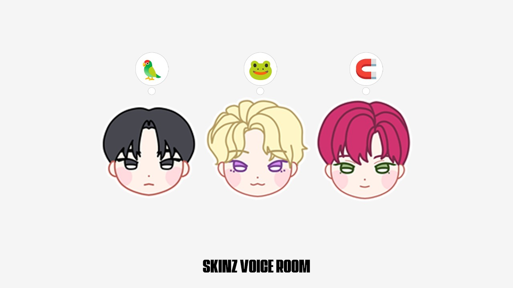

SKINZ分類：Voice Room · 直播日期：2026-03-26SKINZ VOICE ROOM (W. DOVIN, DAEL, FINN)DOVIN, DAEL, FINN 字幕最後更新：2026-10-07在 YouTube 觀看原始影片×載入 YouTube 播放器 繁中韓文雙語字幕大小20%字幕位置 原先位置懸浮字幕全螢幕劇院模式繁體中文點播放後，字幕會顯示在這裡韓文 1010速度 0.75×1×1.25×1.5×2×00:00 / --:-- 分享這篇@fLINE𝕏 影片翻譯評分☆☆☆☆☆選擇 1～5 星展開雙語逐字稿 點擊查看完整內容雙語逐字稿雙語韓文繁中 自動跟隨播放文字大小 A−A＋重設字幕偏移（秒） 字幕比聲音早出現時填正數00:00:01아 아 됐다 됐다.啊 啊 可以了 可以了00:00:02아 원투 원투啊 一 二 一 二00:00:06어 저 택배시킨 적 없는데요.嗯 我沒有叫過宅配耶00:00:08아우唉唷00:00:10소중한 일분이寶貴的一分鐘00:00:11안녕하세요.大家好00:00:14안녕하세요.大家好00:00:18안녕하세요.大家好00:00:20저희 목소리 들리시나요?聽得到我們的聲音嗎?00:00:23아, 들리시나 보다. 안녕하세요.啊 看來聽得到 大家好00:00:25안녕하세요.大家好00:00:27안녕하세요.大家好00:00:28안녕하세요.大家好00:00:30둘 셋 안녕하세요.二 三 大家好00:00:33뭐야? 뭐야? 뭐야? 너 그거什麼啊? 什麼啊? 什麼啊? 你那個00:00:34아니었잖아.不是那樣的嘛00:00:35안녕하세요.大家好00:00:37안녕하세요.大家好00:00:39안녕하세요.大家好00:00:39아니야. 더 높게 잡아야지.大家好00:00:41안녕하세요.大家好00:00:41아, 네가 네가 원키 잡아.大家好00:00:43안녕하세요.大家好00:00:44안녕하세요.大家好00:00:45안녕하세요.大家好00:01:00곤니치와 음你好 嗯00:01:02곤방와晚上好00:01:04헤이 핀嘿 Finn00:01:05곤방와晚上好00:01:06헬로 가이즈大家好00:01:12안녕하세요大家好00:01:14다엘핀도입니다.我們是 Dael Finn Dovin00:01:16다엘핀도Dael Finn Dovin00:01:19저희 오늘은요.我們今天呢00:01:23제가 저번에는 그 밸런스 게임을我上次不是準備了二選一遊戲00:01:26준비했잖아요.嗎?00:01:27네.對00:01:27근데 이번에는 준비를 안 해도對00:01:30오늘은 여러분들과 굉장히 밀접한 방송今天想來一場跟大家非常貼近的直播00:01:34해보고 싶습니다.想試試看00:01:35얼마나 가까이 가실 거죠?要靠多近呢?00:01:37어, 거의 코 앞까지.嗯 幾乎就在鼻子前面00:01:39코 앞까지.到鼻子前面00:01:39예. 콧바람을 맞을 때까지. 오케이.到鼻子前面00:01:42좋습니다. 이렇게.好 就這樣00:01:48아니 아니 무슨 소리를不是 不是 那個聲音00:01:59나오는 그 짤아나?你知道露出那張臉的梗圖嗎?00:02:00어 알아요 알아요. 알아 그런 감성嗯 我知道 我知道 知道 就那種感覺00:02:02느낌으로.那種氛圍00:02:05좋습니다.很好00:02:07근데 이게 이게 이렇게 보고 있어도可是這個 這個可以這樣看嗎?00:02:10되나?可以嗎?00:02:11응. 그러면 그게 나 상관없을 걸.嗯 那應該沒關係吧00:02:14이렇게 이렇게 하는게 나을까? 이렇게這樣 這樣做比較好嗎? 這樣00:02:15오케이好00:02:19내 납작한데.我的很扁耶00:02:22에이 아무리 그래도欸 再怎麼說也00:02:24여러분들은 밥 먹었어요.大家吃飯了嗎?00:02:27저는 아까 다엘 형이랑 그 빵 먹었는데我剛剛跟 Dael 哥一起吃了麵包00:02:32맛있었습니다.很好吃00:02:33아 또 착한 핀이 저희善良的 Finn 又為了讓我們00:02:36먹으라고음吃 嗯00:02:38빵을 엄청 많이 사 왔더라고요.買了超多麵包來00:02:41아 이거 뒤에 있는 거. 응.啊 是後面那些 嗯00:02:45무슨 빵이什麼麵包00:02:46무슨 빵이게猜猜是什麼麵包00:02:49옷빵 금지禁止說衣服麵包00:02:52할 생각도 없으셨다고 하시는데大家說根本沒打算說耶00:02:55죄송합니다.對不起00:03:01어 빵 맛있어 보이더라. 어떻게哦 麵包看起來很好吃耶 怎麼00:03:03어떻게 보셨나요? 제가 올렸어요.你怎麼看到的? 我有上傳照片00:03:05아啊00:03:07역시果然00:03:11도빈아 나 일요일에 스킨즈 시청Dovin 啊 我星期天在 SKINZ 觀看00:03:12이벤트 때 받은 도빈 행운 부적活動拿到了 Dovin 幸運護身符00:03:14포카 들고 자격증 시험 보러 갔는데帶著那張小卡去考證照00:03:15합격했어.考過了00:03:16우와 이거는 이거는哇 這個 這個00:03:18와哇00:03:19자격증 시험 일단 합격 와 이건 정말先說證照考過了 哇 這真的00:03:21축하드립니다.要恭喜你00:03:23이게 또 도빈형 행운 부적이 있기希望也是因為有 Dovin 哥的幸運護身符00:03:26때문에所以00:03:27된 거였으면 좋겠습니다. 그 혹시才考過的 那個 可以00:03:30무슨 자격증인지 여쭤봐도 될까요?請問是什麼證照嗎?00:03:36예. 그니까 우리 바로 말할對 我剛剛一瞬間以為可以直接回答00:03:39수 있는 걸로 순간 생각하고 있어서以為對方可以立刻開口00:03:41귀 기울이고 있었음.所以還豎起耳朵在聽00:03:45스킨즈와 킨디의 축하를 다你同時收到了 SKINZ 和 K!NDY 的祝福呢00:03:47받으시네.全都收到了00:03:48맞습니다. 제 부적이沒錯 我的 我的護身符00:03:50또 성능이 괜찮죠. 사실效果也不錯吧 其實00:03:52제 마음이 이제 진심이 다 들어가因為裡面包含了我的真心00:03:54있기 때문에.我的心意全都在裡面00:03:55음. 어 저도 하나 부탁드립니다요.嗯 我也想要一個 拜託00:03:58어 그 사시면 돼요. 아嗯 去買就好了 啊00:04:02그럼 네가 드린 것도 아니네.那也不是你親手送的啊00:04:06어찌저찌 전달이 된 거네.是輾轉送到對方手裡的啊00:04:09아 난 네가 또 드린 줄 알았네.啊 我還以為是你親手送的00:04:13어 문신사 자격 시험이라고哦 他說是紋身師資格考試00:04:16하시네.是這個考試00:04:16아 축하드립니다.是這個考試00:04:17축하드립니다.恭喜00:04:19멋지다. 멋죠.好帥 好帥吧00:04:21보이시죠? 보이시죠? 도빈이 부적은看到了吧? 看到了吧? Dovin 的護身符00:04:23무적이다.是無敵的00:04:26이겁니다. 여러분就是這樣 各位00:04:29얘들아 거기는 몇 시야? 내가 있는你們那裡幾點啊? 我這裡00:04:31곳은 오후 12시 5분이야.是下午十二點五分00:04:34어디 계세요?你在哪裡啊?00:04:36Where are you from?你來自哪裡?00:04:4120 25시간二十 二十五小時00:04:43차이 정도면은 그래도 꽤 먼데.如果差這麼多 那還滿遠的耶00:04:47호주澳洲00:04:51아니 그 시계 고장난 거不是 該不會是時鐘壞了00:04:54아니죠?吧?00:05:01What's the name of這個人的名字00:05:03this?叫什麼?00:05:04The black hair is黑髮的是00:05:10The brown hair is棕髮的是00:05:11Dael.Dael00:05:13Hair is Finn.這位是 Finn00:05:16Hello.你好00:05:18Nice to meet you.很高興認識你00:05:19Me too.我也是00:05:21아, 폴란드 거주 중이라고? 아.啊 你說住在波蘭? 啊00:05:23오.哦00:05:26거 폴란드가那個 波蘭00:05:29잠시만요.等一下00:05:30유럽 위쪽에 있죠? 완전是在歐洲上面吧? 最上面00:05:32위쪽에 아닌가?不是在上面嗎?00:05:34음.嗯00:05:37동 뭐 동북 이쪽 아닌가?東 什麼 東北這一帶吧?00:05:41그게 뭐가 중요하나? 저희 같은 뭐那有什麼重要的? 我們都在同一個00:05:43지구에 있다는게 네.地球上 對00:05:45중요하죠.這才重要啊00:05:46도빈이랑 핀이는 이모지 왜 그걸로Dovin 和 Finn 為什麼選那個表情符號00:05:48했어?啊?00:05:50아, 저는 뭐 그啊 我的話 那個00:05:52다엘은 알겠다고 하십니다.他說 Dael 的已經知道了00:05:54네.對00:05:56그게 더 질문 질문 그那個 問題 問題 那個00:06:00전에 써져 있던 거지. 저는 모르니까之前就已經寫過了吧 我還不知道00:06:03한번 설명해 주세요, 형.哥 說明一下吧00:06:04네.好00:06:05왜 개구리 다엘인가요?為什麼 Dael 是青蛙?00:06:08아, 저는 그 이제啊 我就是那個00:06:12그 위드 팬에서 저의 이제 방의在 withfan 把我的聊天室00:06:16이름을 다올로 정했어요.名字取成了 Daol00:06:19다올.Daol00:06:20네. 다올이 이제 순 한국말인데 이제對 Daol 是純韓語00:06:23약간 복을 가져다 준다. 약간 이런有帶來福氣之類的00:06:25뜻이라서 제가 이제 다올이들 이렇게意思 所以我就叫大家 Daol 們00:06:27부르거든요.都這樣叫00:06:28근데 약간 다 그 팬분들이可是粉絲們有點00:06:31다엘의 올챙이들 같다 이러는 거야.說自己好像是 Dael 的蝌蚪00:06:33아, 그래서啊 所以00:06:34어, 그래서 이제 오늘 그런 얘기가嗯 所以今天就聊到這件事00:06:36나왔어. 갑자기 어떤 팬분이 나한테突然有位粉絲跟我說00:06:39그 포켓몬 중에서在寶可夢裡00:06:41왕구리라는 포켓몬이 있거든. 개구리인데有一隻叫蚊香蛙皇的寶可夢 是青蛙00:06:44왕구리야.叫蚊香蛙皇00:06:45되게 귀엽게 생겼어.長得很可愛00:06:46그게 나 닮았다 해가지고 아까 막他說那隻很像我 剛剛就00:06:47그런 얘기 해 가지고聊了這些00:06:49내가 그 이모지 개구리를 했어.所以我選了青蛙的表情符號00:06:52어哦00:06:53올챙이들 듣고蝌蚪們 有在聽00:06:54있니?嗎?00:06:55올챙이들蝌蚪們00:06:56그래서 아까 뭐 개구리가所以剛剛有人要我用青蛙00:07:00하는 내가 왕이 될 상인가를說 我有當王的面相嗎?00:07:01성대모사 해 달라고 하셔 가지고要我模仿那句台詞00:07:03개구리가 하는由青蛙來說00:07:03개굴 개굴 개굴 개굴 개굴 막由青蛙來說00:07:06이랬었어.我剛剛就那樣做了00:07:08아닌가?不是嗎?00:07:09재밌네요.真有趣00:07:10내가 왕이 될 상인가 이거 아니야? 이不是 我有當王的面相嗎? 這句嗎?00:07:12이거 맞아.對 就是這句00:07:13음.嗯00:07:13내가 왕이 될 상인가?嗯00:07:15그걸 개구리 버전으로 해드렸었어.我剛剛用青蛙版本說給他聽00:07:19아 대박.啊 太厲害了00:07:19올챙이들 너무 귀여워.啊 太厲害了00:07:21핀이는 저는 자석으로 했는데Finn 的話 我選了磁鐵00:07:23응.嗯00:07:25어 오늘 조금 그 자석처럼 끌린 날이嗯 今天發生了一件像被磁鐵吸引的事00:07:29있었어요.有這麼一件事00:07:31제가 오늘 출근을 하는데我今天來上班的時候00:07:32네. 음.好 嗯00:07:33그 스킨즈가 그려져 있는 거를 보고看到了畫著 SKINZ 的東西00:07:35왔거든요.看完才來的00:07:36어디서요?在哪裡?00:07:37용산에서요.在龍山00:07:38어, 그래요?哦 是嗎?00:07:39예. 그래서對 所以00:07:40그냥 보고만 왔습니다.就只是去看了一下00:07:42음.嗯00:07:43그래서 자석이 왜 자석이에요?所以磁鐵 為什麼是磁鐵?00:07:45어, 그 저도 모르게 그냥 출근을嗯 我自己也沒察覺 就只是在上班路上00:07:47하는 건데 아,這樣而已 啊00:07:48내가 우연처럼 이거를 본 거 자체가我像偶然一樣看到這個 本身就00:07:50어디 끌린 거 같았다.像是被什麼吸引過去00:07:51네. 그래서對 所以00:07:55너는 근데 왜 앵무새야?可是你為什麼是鸚鵡?00:07:57귀여워서.因為很可愛00:08:00아 진짜 성의 없다.啊 真的好沒誠意00:08:01아니 왜 왜 아니 내가不是 為什麼 為什麼 不是 我00:08:05보여주고 싶은 가장 귀여운想讓大家看到最可愛的00:08:07그날에 내가 이모지 중에 가장 귀여운那天我在表情符號裡挑了最可愛的00:08:10알겠네 알겠네我知道了 我知道了00:08:11네가 혼자서 우리 다 알록달록因為我們大家的頭髮都五顏六色00:08:14머리인데 너 혼자 검은 머리니까只有你是黑髮00:08:15앵무새처럼 좀 화려한 색깔을 지금所以你現在有點需要像鸚鵡那樣華麗的色彩00:08:17약간 필요한가 너의 마음 안에서內心是不是有這種需求?00:08:20아니 귀여워서不是 因為很可愛00:08:23예 여러분들 아니라고 하십니까對 各位 他說不是00:08:26도빈 님께서 맞습니다. 맞습니다. 음 음.Dovin 說不是 沒錯 沒錯 嗯 嗯00:08:29아, 왜냐면은 여러분들은 못啊 因為大家看不到00:08:31보셨겠지만 제가 질문하고 짓는可是我問完問題之後 他擺出的00:08:33표정부터가 벌써 제가 짜증이表情就已經讓我覺得煩躁了00:08:36올라오더라고요.我就開始煩躁了00:08:37어떻게 매몰차게 거절을 할지 너무看得出來他打算怎麼冷淡地拒絕00:08:40보여 가지고. 네. 대답을 듣기 전에太明顯了 對 還沒聽到答案之前00:08:42한대 맞은 기분이었어요.就覺得被打了一拳00:08:45아.啊00:08:47아, 근데 그래서 이제 다올이다,啊 不過所以是 Daol 們00:08:50다올이들이다. 네.Daol 們 對00:08:51저는 이제 도자기.我則是 Dojagi00:08:53왜 도자기인가요?為什麼是 Dojagi?00:08:54도빈 자기 아니야. 그 그거 같긴不是 Dovin 親愛的嗎? 雖然好像是那個00:08:57한데 그 도자기라는 그것도 있잖아요.但也有陶瓷的意思嘛00:09:00네. 뭐 그 다 이제 통틀어서 그리고對 這些意思都包含在裡面 而且00:09:02이제 우리 킨디들 이제 도자기들은我們 K!NDY 也就是 Dojagi 們00:09:07맑고 아름답고清澈 美麗00:09:09깨끗하니까又乾淨00:09:10불에放進火裡00:09:11근데 뭐 도자기가 막 이렇게 거칠고可是陶瓷也可能很粗糙00:09:13지저분한 도자기도 있을 수 있잖아요.也有髒髒的陶瓷啊00:09:15제 눈에는 맑고 깨끗하고 아름답죠.在我眼裡就是清澈 乾淨又美麗00:09:17그리고 도자기가 사실은 불에 한번而且陶瓷其實會進火裡燒過一次00:09:19들어갔다 나오거든요.再拿出來00:09:21그거를 그니까 그게 어떻게 보면 어떤就是那個 從某種角度來說00:09:24역경이 오더라도 더욱더 단단해지는不管碰上什麼逆境 都會更加堅固00:09:28아, 역시 위기 강하다니까.啊 果然很擅長應付危機00:09:31그 뿌니는 뭐죠?那 Ppuni 是什麼?00:09:33저는 저희 킨디들 이쁘니까 저는因為我們 K!NDY 很漂亮 而我00:09:36핀이고是 Finn00:09:37뿌니 아 핀이 이쁘니Ppuni 啊 Finn 漂亮寶貝00:09:39예 핀이 앤 이쁘니 해서 뿌니 했어요.對 把 Finn 和漂亮寶貝合在一起 就叫 Ppuni00:09:41어 근데 약간 붙여서 하면은 핀이哦 不過連起來唸就是 Finn00:09:43이쁘니.漂亮嗎?00:09:44응. 핀이 이쁘니. 어 물어보는 거嗯 Finn 漂亮嗎? 聽起來像在問問題00:09:46같네요.像是問句呢00:09:46근데 제가 제일 마지막으로像是問句呢00:09:48정했거든요.決定的00:09:49아니요.不是00:09:50근데 도빈 형께서 이미 지어 주셨다고.可是聽說 Dovin 哥已經幫我取好了00:09:53너의 그 그거를你那個 那個00:09:55뭘로 지어줬어?幫你取了什麼?00:09:56네. 뭐 하나 말씀을 해 주셨다고對 聽說他有提過一個00:09:58들었었는데 위드팬에서.我有聽說 是在 withfan00:10:00아 뭔지는 모르고.啊 但不知道是什麼00:10:01네.對00:10:02뭐였지?是什麼來著?00:10:03근데 사실 원래 저거는 이거긴可是其實原本是這個00:10:05했어요. 도빈 자기야가 세상에서 제일是這句 Dovin 親愛的是世界上最00:10:07귀여워.可愛的00:10:08도빈 자기야가 세상에서 제일 귀여워.Dovin 親愛的是世界上最可愛的00:10:10근데 이걸 제가 제 입으로 말하기는可是這句話要我自己說出口00:10:12조금 이제 음. 아, 근데 요즘 뭐就有點 嗯 啊 不過最近00:10:14그 제가 흘려듣기로는我偶然聽到的是00:10:16네.對00:10:18그 도빈 님 위드팬에서 굉장히聽說 Dovin 在 withfan 非常00:10:19재밌으시다고 그러던데.有趣耶00:10:21아이, 뭐 재밌게哎呀 就是有趣地00:10:22아니 그 이제 또 같은 다른 전不是 因為也有參加過其他00:10:26멤버들을 하신 분들도 있으시니까 네.成員視訊的粉絲嘛 對00:10:28네. 네.對 對 對00:10:28제보가 좀 많이 들어와요.對 對 對00:10:30어.이哦00:10:31재온이나 뭐 핀이나 다른 뭐 율,跟 Jaon Finn 或是其他 Yull00:10:33태오,이랑 뭐 이런 다른 친구들Theo Ilang 等其他人的00:10:35얘기는보다는事情比起來00:10:36네.對00:10:37뭐 도쪽이라는 별명이聽說你有個叫 Dovin 調皮鬼的暱稱00:10:39생겼다고. 말을 왜 그렇게 안有了這個暱稱 為什麼這麼不聽00:10:41들으세요? 팬분들의 말을.粉絲的話啊?00:10:44아니, 근데 이게 사실 이게 제가不是 不過其實這個 我00:10:46최근에 이제 장염을 앓았잖아요.最近不是得了腸胃炎嗎?00:10:49네.對00:10:49네.對00:10:50그래서 이제 팬분들이 너무 걱정을所以粉絲非常擔心00:10:52하시는 거죠. 계속 죽 먹어라.一直叫我吃粥00:10:55이제 일반식 먹지不要吃一般的食物00:10:56말고.叫我不要吃00:10:58근데 또 이제可是後來又00:11:01근데 이제 뭐 일반식을 조금씩 조금씩可是我就開始一點一點吃一般的食物00:11:03트라이를 조금 했어요.稍微嘗試了一下00:11:04음.嗯00:11:05근데 저 옮은 거 같아요.可是我好像被傳染了00:11:07도빈형한테.被 Dovin 哥傳染00:11:09응.嗯00:11:11아까도剛剛也00:11:12배 아프다고 했던 거 같은데.好像說肚子痛00:11:13네네.對 對00:11:15그러니까 빵을 먹으면 안 돼. 그럴所以這種時候不能吃麵包啊00:11:16때 핀아.Finn 啊00:11:17근데 같이 먹었잖아요.可是你也一起吃了啊00:11:18아 나는 난 장염이 아니니까.啊 我又沒有腸胃炎00:11:23저주를在詛咒00:11:25아니 근데 너 아픈 거 나랑 비슷한不是 可是你開始生病的時間00:11:27시기에 아프기 시작하지 않았어?이不是跟我差不多嗎?00:11:29애초에本來就是00:11:30그게 그래서 형한테 옮았다고 생각을所以我以為是被哥傳染的00:11:32했는데?我是這麼想的耶00:11:32나랑 비슷하게 아픈데.我是這麼想的耶00:11:34네.對00:11:34보통 내가 아프고 나서 네가 아파야對00:11:36옮은 거 아니야? 아 그니까 형才算被傳染吧? 啊 所以哥00:11:38아프고 나서 그 이틀인가 다음 날인가生病之後 大概兩天後 還是隔天00:11:40열이 갑자기 조금 나더라고요.我突然有點發燒00:11:42근데 핀이가 은근히 자주 아파.可是 Finn 其實滿常生病的00:11:44응. 맞아 맞아.嗯 對 對00:11:45그러니까 그 자주 아픈 2대장이所以最常生病的兩大代表00:11:47음嗯00:11:48태오 핀이야. 태오 핀.就是 Theo 和 Finn Theo Finn00:11:48맞아 맞아. 태핀.就是 Theo 和 Finn Theo Finn00:11:49어嗯00:11:51그래서 저는 지금은 말끔하게所以我現在好像已經完全00:11:53회복된 거 같은데 방금恢復了 可是剛剛00:11:56여기는 여기는 아닌 거 같아요.這位 這位好像還沒好00:11:57아 배가 이제 배가 아프구나.啊 肚子 肚子還在痛啊00:12:05네네.對 對00:12:06도빈이 장염이 언제 어떻게 재발할지Dovin 像是在研究腸胃炎什麼時候會怎麼復發00:12:09실험하는 대학원생인 줄做實驗的研究生00:12:11그거 PPT 같은 거 주고 막 그러는是不是還會做 PPT 之類的00:12:13거 아니야?那種?00:12:14아啊00:12:16좋습니다.很好00:12:17뭐가 좋은데요? 또 뭐가 좋은데요?什麼很好? 又什麼很好?00:12:20저는 굉장히 근데 괜찮았어요. 어.可是我真的已經很沒事了 嗯00:12:23음.嗯00:12:24근데 사실 그 팬분들한테 장염不過其實跟粉絲說得了腸胃炎的時候00:12:26걸렸다고 말할 때가 약간 한 3일 차已經差不多是第三天00:12:29정도여서那個時候了00:12:30그래도 좀 사람 다워졌을 때요.已經稍微像個人了的時候00:12:33진짜 끙끙 앓을 때는 저희랑 이제真的痛得很難受時 是跟我們00:12:35같이 있을 때였는데一起的時候00:12:37그때는 진짜 거의 이제 병원 다녀오고那時候真的差不多就是去醫院00:12:39막 아무것도 못 먹고 하다가 이게 좀什麼都不能吃 後來稍微00:12:42살만하니까 약간能活過來了00:12:45거 같더라고요. 제보를 들어보니까聽了爆料 感覺是這樣00:12:49황금올리브를 그렇게 먹고 싶다고聽說你超想吃黃金橄欖炸雞00:12:50하셨다고. 아, 네. 네. 맞습니다.你有這樣說 啊 對 對 沒錯00:12:54황올.黃金橄欖00:13:00그래서 제가 그때 작업한다고 어제所以那時候我 因為要工作 昨天00:13:01만나서見面的時候00:13:03야, 너 팬분들이 너 도쪽이라는데 너喂 粉絲說你是 Dovin 調皮鬼耶 你00:13:07왜 계속 너 일반식 먹었지? 그러니까為什麼一直吃一般食物啊? 這樣一問00:13:09벌써 그때부터 신나 가지고 자기他從那時候就很興奮 開始跟我00:13:17그리고 그 장염 걸리니까 자기 배而且他因為得了腸胃炎 肚子00:13:21줄었다고 엄청 좋아했어요.變小了 還很開心00:13:22맞아요.對00:13:23많이 못 먹겠다고.說自己吃不了太多了00:13:24위가 위가 줄어 가지고.胃 胃變小了00:13:27귀엽다. 그걸 자랑했어요, 형한테.好可愛 還拿這個跟哥炫耀00:13:30귀엽네요. 형.好可愛喔 哥00:13:31왜냐면 어제 그 뭐냐, 우리 쭈꾸미因為昨天 那個 我們吃了短爪章魚00:13:34먹었거든.我們有去吃00:13:36왜 나 빼고 또怎麼又沒找我00:13:38불러도 나오지도 않잖아. 우리끼리找你你也不出來啊 你知道我們00:13:41맨날 하는 말이 뭔 줄 알아?每次都怎麼說嗎?00:13:42뭔데요?怎麼說?00:13:43야 근데 이거 뭐 만약에 네가 빠져喂 可是這個 比如說你不在的時候00:13:44있을 때 아 근데 피닉이 또 이거啊 可是 Finn 聽到這件事00:13:46들으면은 어 왜 또 저 빼고해요 막又會說 為什麼又沒找我? 像這樣00:13:48이러겠지 이랬는데 항상 우리 그 뒤에我們會這樣講 可是後面一定又會說00:13:50근데 그게 어차피 불러도 나오지도可是反正找他他也不會出來00:13:51않음 이렇게 끝나. 아니最後都這樣結束 不是啦00:13:53저 부를 때 나가요. 다시 한번 불러找我的話我會出去啦 再找我一次吧00:13:56주세요. 형哥 再邀我一次00:13:57핀이 약간 막상 부르면은 약간Finn 有點真的找他的時候00:13:59핑계 대고 안 나오는데 또 자기 빼就會找藉口不出來 可是又如果沒找他00:14:02놓으면은 우리가 자기 빼고 노는就會像我們把他排除在外00:14:04것처럼 이렇게 불쌍한 척한다.自己出去玩那樣 裝可憐00:14:07네. 근데 맞는 거 같對 不過好像是這樣沒錯00:14:11그러니까 안 불러주면 서운하긴 해.所以沒邀我還是會失落00:14:13내가 안 나가는 거지. 불러줬으면是我自己不出去 可是還是希望你們邀我00:14:15좋겠는 그런 느낌.就是那種感覺00:14:15그냥 안 나가도 불러줬으면 좋겠어.就是那種感覺00:14:17그냥 불러줬으면 좋겠어.就是希望被邀請00:14:20그럼 뭐 오늘那今天00:14:23끝나고 밥 먹을래?結束後要一起吃飯嗎?00:14:25좋아요.好啊00:14:26그냥 해 본 말이야. 와我只是隨口說說 哇00:14:29여러분 진짜 나쁘다.各位 他真的很壞00:14:31흔쾌히 수락하니까 그냥 해 본我爽快答應了 他卻說只是隨口00:14:33말이래요.說說而已00:14:34아 밥 먹고 왔어.啊 我已經吃過飯了00:14:34아 나도 근데 걱정했어. 그 그거 다啊 我已經吃過飯了00:14:36가야 되나?真的得去嗎?00:14:37아 밥 밥 먹고 와가지고啊 我已經吃過飯了00:14:42좋습니다.很好00:14:46왜 물어보기라도 해 줘야 해 줘야죠.至少也要問一下嘛00:14:48그죠? 다엘이랑 핀이랑 같이 유령의 집 갈對吧? Dael 和 Finn 一起去鬼屋的話00:14:51거면 누가 제일 무서울까?誰會最害怕?00:14:53너 근너 귀신 무서워하는 편이야.你 可是你會怕鬼嗎?00:14:54아 근데 저는 그 갑툭튀 그거를 진짜啊 可是我真的很討厭突然嚇人的那個00:14:57시討厭00:14:58갑툭튀는 뭐야?突然嚇人是什麼?00:14:59갑자기 툭 튀어나오는就是突然冒出來的00:15:00갑자기 툭 튀어나오는 갑툭튀突然冒出來嚇人的00:15:02어 근데 전 반대예요.嗯 可是我相反00:15:03전 솔직히 공포 영화 보잖아요. 영화老實說 我看恐怖片 去電影院00:15:05가서 전 진짜 막 중간에 막 눈감 눈看的時候 真的不會看到一半閉眼睛00:15:08것도 없고 그냥 떡都不會 就直接00:15:09놀라지도 않고 왜냐면 그 클리셰잖아.也不會被嚇到 因為那都是套路嘛00:15:12놀라기 전에 항상 신호를 주잖아. 그嚇人之前都會先給提示嘛00:15:14그지 그지 패드가 이렇게 깔린다던가對 對 比如鋪上那種合成音色00:15:17이렇게 그 줌인이 된다던가 그 신호가或是這樣拉近鏡頭 都會有提示00:15:19있어서음 한번 나오겠네 이렇게 해서所以我會想 嗯 要出現了00:15:22놀라진 않는다. 근데 다 보고 나서不會被嚇到 可是看完之後00:15:24집에서 이제 불을 켜고 자야 돼.回到家就得開著燈睡00:15:26그러所以00:15:27근데 요즘 공포 영화는 그런 거 살짝可是現在的恐怖片有點不會00:15:29안 깔긴 해.先鋪那些提示00:15:30아 맞아 맞아 맞아.啊 對 對 對00:15:31클리셰 부수기로會打破套路00:15:32그 점프 스케어를 굉장히現在很多突發驚嚇的場景00:15:35갑작스럽게내는 경우가 많습니다.出現得非常突然00:15:37점프 점프 뭐 또 어려움을 쓰.跳 跳什麼 又用這麼難的字00:15:38아 네네. 그 깜짝 놀라는 장면들.啊 對 對 就是突然嚇人的場景00:15:40점프 스케어. 음突發驚嚇 嗯00:15:41점프 스케어.突發驚嚇00:15:42점프 슈트. 네.連身褲 對00:15:43네. 네. 어쨌든對 對 總之00:15:47그 요즘 뭐 실제로도 좀 그럴 거最近其實我也好像有點那樣00:15:50같긴 한데 그 이제 도빈이가 이런 말就是 Dovin 用這種詞的時候00:15:52쓰면 제가 약간 그 멍청해지는 척我就會假裝變笨00:15:55하면서 연기하는이演一下00:15:56티키타카가 좀 유행이거든요.這種你來我往的互動最近滿流行的00:15:59그 화요일에 봤어요 애들.你們有看星期二那場嗎?00:16:02아 저 근데 사실 솔직히 말하면啊 可是我老實說00:16:04보다가 안 보다가 했어요.有時候看 有時候沒看00:16:06그래서 일부만 알아요.所以只知道一部分00:16:07형 다 보셨어요? 저는 그哥你全部看完了嗎? 我的話00:16:09그때 이제 아파 가지고 누워那時候因為生病躺著00:16:11있을테니까 그냥 라디오 틀듯이 그냥所以就像開收音機那樣00:16:13틀고 있었다고 하던데.開著聽嘛00:16:14그래서 그냥 틀어 놓고 누워所以就開著直播躺著00:16:15있었습니다.我就那樣躺著00:16:16근데可是00:16:17거기서이那裡有聊到00:16:18얘기가 나왔었어요. 그 다엘這件事 那個 Dael00:16:23다엘 형이 노래Dael 哥唱歌00:16:26바지적삼 적신다고.會把衣服褲子弄濕00:16:27아니 진짜 아 팬들이 너무 놀리는不是 真的 粉絲一直捉弄我00:16:30거예요. 그날 대화가 안 됐어. 뭐那天根本沒辦法對話 一講話00:16:32하면 그 근데 다엘 너 뒤에 뭐야?就會說 可是 Dael 你後面是什麼?00:16:34계속 이런 말 하시니까一直這樣說00:16:36집에 혼자 있는데 너무 무서워 가지고我自己一個人在家 超害怕的00:16:38솔직히 좀 삐졌었어요. 그때老實說那時候有點鬧彆扭了00:16:41진짜真的00:16:42놀이 기구는 잘 타세요?你們敢坐遊樂設施嗎?00:16:44놀이 기구는 저遊樂設施的話 我00:16:46못 하는게 없어요. 어 진짜요? 저는沒有不敢玩的 哦 真的嗎? 我00:16:48예전에 한번 아 또 왜以前有一次 啊 又為什麼00:16:51나또 왜 친구야 말해 봐又怎麼了 朋友 你說說看00:16:53아니不是00:16:54옛날에 그 롯데월드를 제가 갔었는데以前我去過樂天世界00:16:57평일에 비가 오는 날이어서是個下雨的平日00:16:59거의 진짜 놀이 공원에 그리고 아침에遊樂園真的幾乎 而且我是一早00:17:01갔거든요.就去的00:17:02근데可是00:17:03우리밖에 거의 없는 정도로 사람이人少到幾乎只有我們00:17:05없는 거야.沒什麼人00:17:06그래서 원래는所以本來00:17:07그 한번 타고 나서 안 내리면 안玩完一次不能不下來嘛00:17:09되잖아. 뒤에 줄이 있으니까. 근데因為後面有人排隊 可是00:17:11그때는 줄이 아예 없어서 그냥 타고那時候根本沒人排隊 所以就一直玩00:17:13타고 했거든. 나 자이로드롭 연속 세一直玩 我連續坐了三次自由落體00:17:15번 탔어.連坐三次00:17:17와哇00:17:18그 놀이기구 중에서 제일 일황이你知道遊樂設施裡最厲害的00:17:20자이로드롭인 거 아시죠?就是自由落體吧?00:17:21그렇죠. 그게 순간적으로 딱 떨어지는對 那種瞬間掉下去的00:17:24그 느낌이感覺00:17:25제일 무서운 그거라고 하던데요.聽說是最恐怖的00:17:27저는 뭐 T익스프레스 이런 거는像 T Express 這些 我00:17:29물구나무 서서 가요. 그냥倒立著也能坐00:17:30그럼 못那不行00:17:31아 그러면 안 되죠. 사실 안돼.啊 那樣不行吧 真的不行00:17:32그럼 못 하죠.那沒辦法啊00:17:34그 정도로就是敢玩到那種程度00:17:35보여 달라고 할 뻔.差點叫你表演一下00:17:36음.嗯00:17:38놀이 기구는 잘 타는데 귀신이 너무我敢玩遊樂設施 可是很怕鬼00:17:40무서워요.超怕鬼00:17:41아 저는 다 무서워 해 가지고啊 我全都怕00:17:43놀이기구도遊樂設施也怕00:17:46자이로드롭은自由落體的話00:17:48으 하는 느낌만 있지 사실 멀미가只有嗚的那種感覺 其實完全不會暈00:17:50하나도 안 나잖아. 난 그래서 좋아.所以我很喜歡00:17:52그렇지. 원래 자이로드롭 그 위에서對 自由落體在上面00:17:54이렇게 뚱뚱똥똥똥똥 돌 때가 이제像這樣轉的時候00:17:57제일 쫄깃쫄깃하죠.才是最緊張刺激的00:17:58그 진짜 막 미쳐 버릴 것 같은真的會讓人快瘋掉00:18:01우리 다음에 번지 바로 갈래?我們下次直接去高空彈跳嗎?00:18:04어嗯00:18:05저도 번지 해 봤어요 옛날에. 안我以前也玩過高空彈跳 沒00:18:07해봤어요.玩過00:18:07저는 안 해 봤는데.玩過00:18:09근데 번지 점프는 번지 점프도 딱可是高空彈跳 高空彈跳也跟00:18:12그 자이로드롭이랑 비슷하긴.自由落體滿像的00:18:14근데 그게 있잖아. 그건 자기가可是那個嘛 那個要自己00:18:16뛰어야 되잖아.跳下去啊00:18:17아, 그지.啊 對00:18:18나는 그래서 내가 그걸 나는 정말所以我 我真的00:18:20그런 거 난 자 익스트림한 거我很喜歡這種極限活動00:18:21좋아하거든. 근데 나도可是就連我00:18:25내가 내 발로 뛸 수 있을까라는也會想 我能靠自己的雙腳跳下去嗎?00:18:26생각이 들긴 해.會這麼想00:18:27아,啊00:18:28아니, 근데 결국엔 할 수 있을 것不是 可是最後應該還是能跳00:18:29같은데 한 번만 할 수 있을까라는但會想 能不能一次就跳下去?00:18:32생각이 들긴 해.會這麼想00:18:32저 지금 식은땀 나요. 생각하니까.會這麼想00:18:34내가 너 안고 뛸게.我抱著你跳00:18:35안 돼요. 안 돼. 저 줄 안不行 不行 這樣我身上就沒有00:18:37메달려 있잖아요 그러면.綁繩子了啊00:18:38아니 당연히 뭐야不是 當然 什麼啊00:18:41안 돼요.不行00:18:43근데 그 번지 점프는 딱 그 뛰어내리고可是高空彈跳 跳下去之後00:18:50첫 번째 튕길 때까지가 제일到第一次彈起來之前是最00:18:51무서워요.恐怖的00:18:52맞아 맞아. 그 뒤에는 그냥對 對 後面就只是00:18:53울렁울렁이죠.晃來晃去00:18:54맞아 맞아. 왜냐면은 그 확신이 안對 對 因為心裡沒有把握00:18:56들어 가지고.沒辦法確定00:18:58근데 그 물에 닿아서 머리가 확可是如果碰到水 頭髮一下子00:18:59감겨지면 어떡해요?都洗好了怎麼辦?00:19:01그러면은 뭐 말려야 되지 않을까요?那就要吹乾吧?00:19:03아.啊00:19:06자, 그만할게요.好 我不說了00:19:06시원하네요.好 我不說了00:19:09그니까 그런 걱정도 약간이 두려움에所以這種擔心好像也包含在恐懼裡00:19:13포함이 되는 거 같아. 그 막 어,比如說 啊00:19:15물에 젖으면 어떡하지? 어, 이거 줄弄濕了怎麼辦? 啊 這個繩子00:19:17끊어지.斷掉00:19:17어, 근데 너는 한 번에 뛰었어.斷掉00:19:19응.嗯00:19:20어,哦00:19:20근데 넌 그럴 거 같다.哦00:19:22아, 저는啊 我00:19:23이게 딱 하고 나서 내려와서 첫 마디就是跳完之後下來 第一句話00:19:26별거 아니네. 이럴 거 같아. 해就會說 沒什麼嘛 感覺你會這樣 試試看00:19:28봐.說一次看看00:19:29재밌네.真好玩00:19:32그리고 바지 다 젖어져 있는 거然後褲子都濕了00:19:33아니야? 바지 바지적삼 바지적삼不是嗎? 褲子 衣服褲子 衣服褲子00:19:36하셔 있는데都濕了00:19:36그리고 이제 아이 물에 젖었네 이거.都濕了00:19:38아啊00:19:41그런 말투와 그렇지 못한 바지那種語氣 卻配上另一回事的褲子00:19:45저는 바이킹도 되게 힘들게 탔어요.我連海盜船都坐得很辛苦00:19:49어 진짜哦 真的?00:19:49처 처음 탈 때도哦 真的?00:19:50그 가운데 탔어요?你坐中間嗎?00:19:52네對00:19:53끝에 타야 재밌는 거 알죠?你知道坐最邊邊才好玩吧?00:19:54아 재미 없던데啊 我覺得不好玩00:20:01그那個00:20:02근데 그거 아세요?可是你知道那個嗎?00:20:03뭐요?什麼?00:20:04롯데월드 괴담 모르세요?你不知道樂天世界的怪談嗎?00:20:06어 저 많이 검색해 봤던 거 같아.哦 我好像查過很多次00:20:07아니 그러니까 이런게 있어. 여러不是 就是有這種事 很多人00:20:09사람이 막 왔다 가잖아.來來去去嘛00:20:11그니까 예를 들어서 뭐 A라는 놀이比如說有個叫 A 的遊樂設施00:20:12기구가 있으면假設有這種設施00:20:13어 이게 사건의 발단이 어떻냐면 어떤嗯 事情的開端是有個人要寫遊記00:20:16분이 이제 후기를 쓴다고 어디 막就在某個地方00:20:19글을 올리신 거야. 아 뭐 롯데월드發了篇文章 啊 我跟朋友去了樂天世界00:20:22이렇게 친구랑 갔다 왔는데요. 뭐大概是這樣00:20:24A라는 놀이기구 좀 뭔가 스산했어요.有個叫 A 的遊樂設施感覺陰森森的00:20:26막 이랬는데 예 롯데월드 그런他是這麼寫的 可是有人說 樂天世界沒有那種00:20:28놀이기가 없는데요. 이렇게 된遊樂設施耶 就變成這樣00:20:29거예요.事情是這樣00:20:30어 맞아.嗯 對00:20:31그거 그거 그거 아세요 여러분들?你們知道那個嗎 各位?00:20:33그게 무슨 모험이었는데?那是某個什麼冒險的設施吧?00:20:34와 나 벌써 무섭네. 그래가지고 아哇 我已經開始害怕了 所以 啊00:20:37봐서 무슨 신밧드의 모험是什麼辛巴達的冒險00:20:38신밧드의 모험辛巴達的冒險00:20:39신밧드의 모험 있는 거 아니에요?不是有辛巴達的冒險嗎?00:20:42없어.沒有00:20:43없는 건가? 아 근데 뭐 몰라이沒有嗎? 啊 可是我不知道00:20:45신밧드의 모험 아닐 수 있는데 어쨌든不一定是辛巴達的冒險 總之00:20:47A라고先叫它 A00:20:48그런데 그래서 이제 에이 그 착각하신可是大家本來說 欸 應該是你看錯了00:20:50거기 좀 했는데 그 놀이기구 저도但是一直有人說 那個設施我也00:20:52봤어요라는 사람이 계속 올라오는看過00:20:53거야.越來越多人這樣說00:20:54근데 오피셜로는 그 놀이 기구는可是官方說確實沒有那個00:20:56없는게 맞아.遊樂設施00:20:59나도 뭔가 어디서 들어봤던 거我也好像在哪裡聽過00:21:00같은데.好像有聽過00:21:02아 너무 무섭다.啊 好恐怖00:21:05신밧드의 모험은 있던 거 같아요.好像是有辛巴達的冒險00:21:07신밧드의 모험이 아니라 어떤 무슨不是辛巴達的冒險 是某個什麼冒險呢?00:21:09모험이었어요? 어드벤처였나? 납량是冒險世界嗎? 要來個納涼00:21:12특집 특집 할래? 오늘特輯嗎? 今天00:21:153월인데現在才三月耶00:21:17히터 좀 켜.開一下暖氣00:21:19히터 좀 틀고 해 볼래?要不要開著暖氣來講?00:21:21근데 저도 그게 알고 있는게 굉장히可是我知道的那個是非常00:21:24유명한 괴담인 거 같아요.有名的怪談00:21:26맞아. 아니면 이거 바이럴인가?對 不然這是病毒式宣傳嗎?00:21:29아啊00:21:29마케팅인가?啊00:21:30아 더 놀러오라고.啊 為了叫大家多來玩00:21:31응.嗯00:21:41킨디들은 놀랐으셨어도K!NDY 雖然有被嚇到00:21:42아 시끄럽다고 하셨어.啊 他們說很吵00:21:45죄송합니다.對不起00:21:51나도 저게 신밧드의 모험으로 알고 있긴我也記得那個是辛巴達的冒險00:21:53해. 동굴 같은데 인형들로 이제 막在類似洞穴的地方 用人偶00:21:54스토리 진행하면서 막一邊推進故事00:21:57근데 솔직히 그게 신밧드의 모험인지可是老實說 是不是辛巴達的冒險00:21:59아닌지 중요한게 아니고 우리가이並不重要 而是我們講這個00:22:01얘기를 하면서 무서운 감정을 느낄 수故事時能感受到恐懼00:22:04있다는게 난 좋은 거 같아.我覺得這樣很好00:22:05음. 음.嗯 嗯00:22:08무서워. 내가 내가 후에好可怕 我 我之後00:22:09후폭풍이 세긴 하거든. 근데 무서운後勁會很強 可是講恐怖故事00:22:12얘기를 하는 걸 솔직히 하지 마老實說 雖然嘴上叫你們不要講00:22:13하면서도 좀 재밌긴 해. 솔직히.但還是覺得滿好玩的 老實說00:22:16음.嗯00:22:17그 호들갑 떠는게 좀 재밌고.大驚小怪的反應滿好玩的00:22:20그럴 수 있지.也會這樣啊00:22:22에버랜드는 진짜 귀신 있잖아.愛寶樂園真的有鬼耶00:22:24진짜요?真的嗎?00:22:25진짜예요?是真的嗎?00:22:39I'm dying.我要死了00:22:40쉽게 무서워하는 사람. 음.容易害怕的人 嗯00:22:45노랑이. 내일도 출근하는게 더黃色的 明天還要上班比較00:22:47무서워.可怕00:22:48아,이 너무 현실적이다.啊 這太現實了00:22:52엘들갑.Dael 又大驚小怪00:22:55저는 저희 방송 때 그 공포 게임 할我們直播玩恐怖遊戲的時候00:22:58때도 조금 막 긴장이 엄청 된 상태로我也是非常緊張地00:23:01했었거든요.在玩00:23:03뭐 다 멤버들이랑 같이 하는데도 그냥雖然都是跟成員一起玩00:23:05그 보여지는 그 이미지 때문에 좀可是光是看到那些畫面00:23:09긴장이 돼서 손에 땀이 많이 생겼던음就會緊張 手心出了好多汗 嗯00:23:13근데 귀신은可是鬼00:23:14사람만 있나요?只有人類的鬼嗎?00:23:18동물動物00:23:18그 그게 그게 약간 그래서 말이 안動物00:23:20된다 막 그랬었지 않나? 님 동물這根本不合理嘛 有動物00:23:21귀신은 있나요?的鬼嗎?00:23:28동물 귀신 귀엽겠다. 뭐 두더지 귀신動物的鬼應該很可愛 比如鼴鼠的鬼00:23:30뭐 이런 거 있으면如果有這種的話00:23:31그러면은 막 티라노사우루스 렉스 귀신那也會有暴龍的鬼00:23:33이런 것도 있나요? 있겠죠. 근데 막之類的嗎? 應該有吧 可是搞不好00:23:36수염 있고 오래돼서有鬍子 因為過了很久00:23:39할아버지 티렉스일 수도 있잖아.也可能是暴龍爺爺啊00:23:44와가 아니고不是哇00:23:48와哇00:23:51그니까 좀 안 무섭긴 하다.所以好像就不怎麼可怕00:23:53그러게요.對耶00:23:55어 심야괴담회에서도哦 聽說 深夜怪談會 也00:23:57에버랜드 몇 번 나왔대요. 아提過幾次愛寶樂園 啊00:23:59에버랜드 롯데월드가 아니고是愛寶樂園 不是樂天世界00:24:05재온 율 핀 다엘 같이 공포 게임Jaon Yull Finn Dael 一起玩恐怖遊戲00:24:10근데 재온이 겁이 좀 없지 않나?可是 Jaon 好像不太怕吧?00:24:12재온은 재온이 같이 했는데Jaon 我跟 Jaon 一起玩過00:24:16되게 겁 없이他很不怕00:24:18뭔가 그 컨텐츠를 다 하고 싶어 하는感覺很想把那些企劃內容全都做完00:24:20그런 느낌이 강했어요.這種感覺很強烈00:24:21음. 음.嗯 嗯00:24:22뭔가 겁 없을 것 같아.感覺他不太會怕00:24:23음.嗯00:24:25귀신 앞에서도 엥? 저요?在鬼面前也會說 欸? 我嗎?00:24:30진짜예요?真的嗎?00:24:32진짜임? 귀신 하이 하이 이럴 거真的? 鬼 哈囉 哈囉 感覺會這樣00:24:36같은데.他會這樣吧00:24:36귀신 얘기하면 귀신 오는데.他會這樣吧00:24:39재온이도 무서워해.Jaon 也會怕00:24:41털덜떨.發抖00:24:44근데 이게 저희가可是我們00:24:46저랑 율이랑 해 가지고 공포 사연我跟 Yull 不是一起收恐怖故事00:24:49받아서 공포 특집 해 봤잖아요.做過恐怖特輯嗎?00:24:50아 맞아요.啊 沒錯00:24:53근데 고르기가可是挑故事00:24:55굉장히 힘듭니다.非常困難00:24:57왜요? 왜요? 너무 다 무서워서요.為什麼? 為什麼? 因為都太可怕嗎?00:25:00예이.欸00:25:02넌 더 겁 없잖아.你又不怕00:25:04근데 글로 그 무서움을 표현할 수可是能用文字表現那種恐懼00:25:06있는게 조금 대단하다.還滿厲害的00:25:09글만 봤는데도 무서움을 진짜 무서운光看文字就會害怕 那不就是真的00:25:11거 아니에요.很恐怖嗎?00:25:13네.對00:25:13그니까對00:25:14맞아요.沒錯00:25:14약간 분위기 잡는 그런 것도 없이沒錯00:25:16그냥 텍스트로만 있는데 무서우면就只有文字 如果這樣還會怕00:25:18그 진짜 무서운 거야.那就是真的很可怕00:25:21이제 좀 오래 한 거 같은데好像已經聊滿久了00:25:23그만할까요? 귀신 너무 많이 올 거要不要停了? 感覺會來好多鬼00:25:25같은데. 아, 저 사실 지금啊 我現在真的00:25:26막 한기 느껴져요.覺得有寒意00:25:28엥?欸?00:25:29예.對00:25:30실제로 손이 지금 차가워지고 있어요.我的手現在真的變冷了00:25:32수족냉증 아니에요?不是手腳冰冷嗎?00:25:33아니에요. 저 태양인이에요.不是 我是太陽人00:25:40그래서 태 태양 선배님 노래를所以你很會唱太陽前輩的歌00:25:41잘하시는 거예요?是因為這樣嗎?00:25:42아, 해 주시죠.啊 唱給我們聽吧00:25:45뭐 어떤 걸까요?哪首呢?00:25:46눈 코 입 해 주시죠.唱 Eyes Nose Lips 吧00:26:02좋습니다.很好00:26:04핀이 몸이 많이 안 좋구나.Finn 身體真的很不舒服啊00:26:07야 근데 이거 노래 듣고 쓰신게喂 可是你不是聽完歌才打這句的吧00:26:09아니잖아.不是吧00:26:10티났어. 미안.露餡了 抱歉00:26:14아 타이밍이 참啊 這個時間點真是00:26:27아 링가링가를 어떻게 합니까? 여러분啊 要怎麼唱 Ringa Linga 啊 各位00:26:31형들이 비웃을 거 같아요.哥哥們好像會笑我00:26:33왜요? 왜요?為什麼? 為什麼?00:26:43아 핀이면 귀엽긴 하겠다 그니까啊 如果 Finn 來唱應該很可愛 就是說00:26:45해 줄 수 있어?能唱給我們聽嗎?00:26:51그냥 랩은 자신감이야饒舌就是靠自信00:26:54랩 진짜 잘하고 싶은데我真的很想把饒舌唱好00:26:57사실 다엘 형한테 많이 배우거든요 랩其實常跟 Dael 哥學饒舌00:26:59저도 못 해요 근데可是我也不會啊00:27:02그래서 WHY U MAD 파트所以 WHY U MAD 的段落00:27:04없잖아요. 거기不是在那裡嗎?00:27:06그 이랑이야 조금那是 Ilang 啊00:27:12보여주세요.表演給我們看吧00:27:14저요?我嗎?00:27:26어嗯00:27:27근데 요즘 제가可是最近我00:27:28네對00:27:32목이 좀 많이 안 좋아.喉嚨不太舒服00:27:33아 이런啊 糟糕00:27:35그래서所以00:27:39그 그래서那個 所以00:27:40회복을 좀 빨리 해야 되는데得快點恢復00:27:41아 오늘 노래 시키지 말라는 게 잘 돼요.啊 今天很成功地讓大家別叫你唱歌了00:27:43아啊00:27:44제가 근데 저번에도 피한테可是我上次也跟 Finn00:27:46얘기했잖아.說過了嘛00:27:46맞아. 아 맞아요.說過了嘛00:27:47가성이 너무 안 돼. 큰일 났어.假音完全唱不出來 糟糕了00:27:49근데 좀 다시 붙었다고 하지 않았어?可是你不是說稍微接得上了嗎?00:27:50근데 그게可是那個00:27:52아예 안 될 때보다 그냥 붙었 거지.只是比完全唱不出來時好一點00:27:55그 제가 딱 쓰는 그就是我平常使用的那個00:27:56그 음역대에서 이렇게 가성으로 싹音域裡 可以很順地切換到假音00:27:58쉽게 넘어가는很輕鬆地轉過去00:28:00힘을 주지 않아도 할 때가 있는데 그有時候不用出力也能唱出來 可是00:28:02거기서 안 붙어요.在那裡接不上00:28:04음.嗯00:28:05그래서 좀 좀 목을 좀 관리를 하고所以得好好照顧一下喉嚨00:28:07쉬게 해 줘야 될 것 같아요.讓它休息一下00:28:09그때 관리 잘해야 돼요. 진짜這時候真的得好好保養00:28:11저도 요즘 그런는데 같이 병원我最近也這樣 一起去醫院00:28:13가시죠?吧?00:28:14안 그럼 우리 병원 가기로만 한 달不然我們光說要去醫院 好像就已經00:28:18전 된 거 같은데說了一個月了00:28:19아니면 폴립 같은 거 올 수도不然可能會長息肉00:28:20있어요. 진짜真的00:28:22폴립 이게 접히는 거야?息肉 這是會折起來的嗎?00:28:25그건 플립.那是摺疊00:28:31예 맞아요 맞아요 맞아맞對 沒錯 沒錯 沒錯00:28:36그 다엘 핀 이렇게 둘이서 맨날Dael 和 Finn 他們兩個每天00:28:38이래요. 맨날 한 두 달째 지금 아都這樣 每天 已經一兩個月了 啊00:28:41막 이렇게 얘기하다가 아 내 왜 나就像這樣聊著 啊 為什麼我00:28:43왜 또 가성 안 나오지? 아 형 진짜又唱不出假音了? 啊 哥 我們真的00:28:45저희 병원 가야죠. 아 진짜 가자得去醫院 啊 真的去吧00:28:46언제 갈래? 아 진짜 빨리 조만간에什麼時候去? 啊 真的近期趕快00:28:49가요. 이때 괜찮아? 아 저 이때는去 這時候可以嗎? 啊 我這時候00:28:51뭐 있는데 너 그럼 형 이때有事 那哥你這時候00:28:53괜찮아요? 아 나는 이때 뭐 있어 아可以嗎? 啊 我這時候有事 啊00:28:56근데 빨리 가야 되긴 하는데 이거를可是我們真的得趕快去 就這樣00:28:58두 달 동안 하고 있어. 어 조만간講了兩個月 嗯 近期00:29:00날 잡아보자.找一天吧00:29:02내일 내일 내일 어 그러다가 그러다明天 明天 明天 然後後來00:29:04핀이 형 근데 병원 갈 생각 있긴Finn 就說 哥 你真的有打算去醫院00:29:07하신 거죠? 이렇게 한번嗎? 像這樣00:29:08물어봤어. 그래서 나도 아 나問了一次 所以我也說 啊 我00:29:10진짜라니까. 나 진짜 가성이 안 돼.是真的啦 我真的唱不出假音00:29:12아 진짜 언제 되는데? 그래서 그啊 真的什麼時候可以? 所以那個00:29:14이때 아 이때 안 되는데 저때 아 야這時候 啊 這時候不行 那時候 啊00:29:17그럼 진짜 조만간 날를 잡아보자.喂 那我們近期真的找一天吧00:29:18이거를這些話00:29:19음嗯00:29:20뭐 한 달 넘게 한 거 같긴 해요.好像已經講了一個多月00:29:21맞아요. 약간 그 별로 안 친한데沒錯 感覺就像不太熟00:29:24자주 만나게 되는 친구들처럼 그렇게卻又常常碰面的朋友那樣00:29:26하더라고요. 약속 잡는 것처럼.像約時間見面一樣00:29:28저희 친하니까 뭐 언제든지 가는我們很熟 所以隨時都能去00:29:31가니까.都可以去00:29:31언제든지 가죠. 내일 내일都可以去00:29:33내일요? 내일 내일 내일 내일 내일明天嗎? 明天 明天 明天 明天 明天00:29:35저 10시我十點00:29:36내일은 저희 스케줄이明天我們有行程00:29:37모래 뭐래 모레後天 後天 後天00:29:39월요일 월요일 월요일 아침부터星期一 星期一 星期一 一早00:29:40화요일 화요일 화요일星期二 星期二 星期二00:29:42여기까지 하겠습니다.就說到這裡00:29:43네好00:29:44조만간 날을 잡아 보자 핀아 네近期找一天吧 Finn 啊 好00:29:51좋습니다.很好00:29:52뭐가 더 좋은데요?又有什麼很好啊?00:29:54아, 그리고 진짜이 자리에서 도빈형啊 而且我真的想趁現在搶走 Dovin 哥00:29:57파트를 뺏고 싶은데요.的段落00:29:59네.好00:29:59Poison Ivy 그 첫 부분 있잖아요.好00:30:01네. 네. 네.對 對 對00:30:02아, 저는 진짜 뺏을 생각 하나도啊 我真的完全沒有想搶的意思00:30:04없어요.沒有這種打算00:30:04아, 너무 멋있어요. 그沒有這種打算00:30:06제가 그걸 못 해요. 그我做不到那個00:30:07집에서 계속 생각나.在家一直想到00:30:19이런 느낌 아니야?不是這種感覺嗎?00:30:21그지?對吧?00:30:21보컬 프라이? 약간 그런 느낌.對吧?00:30:24그래 이렇게 약간 그 이렇게 먹는 통對 就是有點這樣 要有那種壓住的聲音00:30:28있어야.要有那種聲音00:30:28맞아 맞아.要有那種聲音00:30:33안 된다.不行00:30:36네.근데 저도 그래서 그 목 상태가對 可是我喉嚨狀況好的時候00:30:39좋으면 잘 안 돼요.也不太能唱出來00:30:40아, 안 좋아야지 돼요.啊 得狀況不好才行00:30:41예. 목 상태가 좋으면은 약간 그對 喉嚨狀況好時 有點像00:30:44할아버지 목소리처럼老爺爺的聲音00:30:47접지가 돼 버려서 이게 살짝 접지가因為聲帶會閉合 這個要稍微00:30:48안 돼야 되거든요.不太閉合才行00:30:53약간 이렇게 되는데 접지가 잘되면會變成這樣 可是閉合得好時00:30:55약간就有點00:30:58어嗯00:31:02아 나는 그게 보컬 하면서 그가 같이啊 我沒辦法邊唱邊發出那個聲音00:31:04안 된다. 신기하다. 그게 있어요.好神奇 有這種情況00:31:08아 저 멋있다. 하고 싶다.啊 好帥 我也想做到00:31:12차리 거길 놀려봐. 어디?乾脆去試那一段吧 哪裡?00:31:16거기那裡00:31:17태오 파트 태오 파트Theo 的段落 Theo 的段落00:31:18아 태오 형 발음이 너무 좋아서 그건啊 Theo 哥的發音太好了 那個也00:31:20또 그래是啊00:31:21그래야 다 이유가 있다니까所以都有原因嘛00:31:27아는 동생한테 25.14 들려줬는데我放 25.14 給認識的弟弟聽00:31:30도입부 도빈이 부분 너무 자기他說開頭 Dovin 的段落非常合他的00:31:32취향이래口味00:31:33감사합니다.謝謝00:31:38감사한 거 맞지? 네 네. 너무你是真的在感謝吧? 對 對 非常00:31:40감사합니다.感謝00:31:43이렇게 하자. 그러면은那我們這樣吧00:31:45도빈의 저음이 진짜 특별한 건지 지금現在來測試一下 Dovin 的低音00:31:48한번 테스트를 해 볼 건데 우리是不是真的很特別 我們00:31:50순서를 섞어서 그냥打亂順序00:31:51네.好00:31:52아라는 글자를用 啊 這個字00:31:54네.好00:31:54내가 낼 수 있는 저음으로 해서好00:31:57팬분들이 1, 2, 3번 중에 몇請粉絲猜一二三號裡00:31:58번이 진짜 도빈인지 맞추기 어때?哪個才是真正的 Dovin 怎麼樣?00:32:01사실 한 두 명 정도 더 있으면 더其實再多一兩個人會更00:32:03재밌긴 한데有趣00:32:05이런 거 돼요.像這種也可以00:32:06아니 아니 그러니까 초저음不是 不是 就是說 不用超低音00:32:09말고 그냥 이제 듣기 좋은 저음이라고就當作好聽的低音00:32:11생각하는데 그냥 아라는 딱 한 글자로只發出 啊 這一個字00:32:14했을 때這樣的時候00:32:151 2 3번 누군지 맞춰보기. 자猜一二三號分別是誰 那麼00:32:16그러면은接下來00:32:18이렇게 하죠. 이렇게.就這樣吧 這樣00:32:20네好00:32:20이렇게. 이렇게 알겠습니다.네好00:32:23여기서 해야 돼.得在這裡做00:32:26아啊00:32:32아啊00:32:49몇 번일까요?會是幾號呢?00:32:54아니, 그러니까요.不是 就是說啊00:32:56오.哦00:32:57와, 1번哇 一號00:32:58모른다. 모른다.不知道 不知道00:33:02와.哇00:33:03와. 이哇 這個00:33:07야, 근데 봐봐. 진짜 모르신다니까.喂 可是你看 真的不知道耶00:33:22좋습니다.很好00:33:25근데 이게 아로 하면 잘 모를可是用 啊 的話應該不太容易猜00:33:27거예요. 그那個00:33:28그래서 아로 했어.所以才選 啊00:33:28네. 왜냐면 이게 뭐 뭐냐? 문장으로所以才選 啊00:33:32해 버리면은 그 각자 말투가 나와每個人說話的語氣就會00:33:33버려 가지고跑出來00:33:34맞아.對00:33:37다시 다시再一次 再一次00:33:37정확합니다. 정확합니다.再一次 再一次00:33:391번 다엘, 2번 도빈, 3번一號 Dael 二號 Dovin 三號00:33:41핀이었습니다.是 Finn00:33:42근데 맞추신 분보다 다르게 말씀하신不過答錯的人比答對的人00:33:44분이 더 많긴 하다. 그렇지?還多耶 對吧?00:33:46한 번 더 해 볼까? 다른 글자로要再玩一次嗎? 換個字00:33:48오로 할까요? 오로. 그러면은 이거用 喔 好嗎? 喔 那這個00:33:50이거 그럼 이건 너무 쉬울 것 같긴這個好像又太簡單了00:33:52한데不過00:33:52음不過00:33:54아 이렇게 하자. 그러면 우리가 세啊 這樣吧 因為我們只有三個人00:33:55명밖에 없으니까就三個人00:33:56총 다섯 번을 해. 순서를 섞어서.總共做五次 把順序打亂00:33:58그래서 몇 번 몇 번이 도빈인지然後猜哪幾號是 Dovin00:34:00아啊00:34:01그냥 안녕으로 하자. 알겠.就用 你好 吧 好00:34:03자 그러면은好 那麼00:34:04좋습니다.很好00:34:12아 잠깐 아니었지.啊 等一下 不是這個00:34:15오케이 오케이好 好00:34:16오케이.好00:34:18자, 그냥 다섯 번 연속으로 안녕.好 就連續說五次 你好00:34:19다섯 번 할게요. 몇 번이 도빈인지我們會說五次 猜哪個是 Dovin00:34:21뭐 그 두 개일 수도 있고 세 개일可能有兩個 也可能有三個00:34:22수도 있고 한 개일 수도 있어요.也可能只有一個00:34:23준비 시작.準備 開始00:34:25안녕.你好00:34:29안녕你好00:34:33안녕.你好00:34:36안녕.你好00:34:41안녕.你好00:34:43몇 번이 도빈이게요?猜猜幾號是 Dovin?00:34:47근데 이게 더 어려우실 것 같아.可是這個應該更難00:34:49어,嗯00:34:57이거 근데 진짜 아까보다 훨씬 못可是這個真的應該會比剛剛更難00:34:58맞추실 것 같아요.猜對00:35:00진짜 이거 이건 이건 진짜 맞추시기真的 這個 這個真的應該很難00:35:02어려웠을 거예요.猜得出來00:35:02웃겨서 제대로 못했지. 맞아.猜得出來00:35:07오哦00:35:09이걸 생각보다 많이 맞추신다.答對的人比想像中多耶00:35:11어떻게 하셨지?怎麼猜出來的?00:35:12잠깐만.等一下00:35:14와.哇00:35:14우와.이 이 잠깐만哇00:35:15완벽하게 맞추신 분이 계시네.有人全都猜對了耶00:35:16오, 그러니까 완벽하게 맞추신 분이哦 就是說 有人完全00:35:18계시네.猜對了00:35:21오,哦00:35:21오 두 분이 일단 완벽하게 맞추셨고.哦00:35:24맞아 맞아.對 對00:35:26근데 저렇게 다 적으신 거는 들으면서可是把每個都寫出來 是邊聽邊00:35:28실시간으로 지금 적으신 거야.即時寫下來的啊00:35:29그러니까 대단하신 거야.所以真的很厲害00:35:30맞. 와, 킨디 대단하다. 우와.對 哇 K!NDY 真厲害 哇00:35:33핀 다엘 핀 도빈 다엘이 맞습니다.Finn Dael Finn Dovin Dael 沒錯00:35:35맞습니다.沒錯00:35:36오, 근데 이걸 훨씬 더 많이哦 可是這個反而更多人00:35:38맞추시네. 핀다도다.猜對耶 Finn Dael Dovin Dael00:35:40핀다도다입니다.是 Finn Dael Dovin Dael00:35:42핀다 핀도다.Finn Dael Finn Dovin Dael00:35:45꽃이 핀다 핀도다.花開了 Finn Dael Finn Dovin Dael00:35:50안녕하니까 목소리가 들린다고. 아.說 你好 就能聽出聲音了 啊00:35:53아. 안녕.啊 你好00:35:574번만 도빈이었습니다.只有四號是 Dovin00:35:58오.哦00:36:021번 핀. 2번 다엘 3번 핀. 4번一號 Finn 二號 Dael 三號 Finn 四號00:36:06도빈.Dovin00:36:07도빈Dovin00:36:07도빈. 5번 다엘입니다.Dovin00:36:10핀다 핀도다Finn Dael Finn Dovin Dael00:36:13핀다 핀도다Finn Dael Finn Dovin Dael00:36:17핀다도다Finn Dael Dovin Dael00:36:22핀다도다 핀다도다Finn Dael Dovin Dael Finn Dael Dovin Dael00:36:26재밌네 어쨌든 뭐真有趣 總之00:36:28결과적으로 도빈의 저음은 특이最後就是 Dovin 的低音很特別00:36:31특별한 걸로決定當作很特別00:36:32그러면那麼00:36:33네好00:36:34그 핀이 미성도 한번 해 볼까요?要不要也測一下 Finn 的清亮嗓音?00:36:36어 좋은데요哦 不錯耶00:36:37네好00:36:38뭘로 할까요要用什麼?00:36:39그러면은 는那麼00:36:42하로 할까 그니까 길게 끄는 거用 哈 嗎? 就是把音拉長00:36:44아 그거 그거 너무 쉬나 그러면啊 那個 那個是不是太簡單了?00:36:47똑같이 안녕으로 할까요?一樣用 你好 好嗎?00:36:48안녕你好00:36:48아 근데 그것도 핀이 목소리가 너무你好00:36:50특이해서有特色了00:36:52아니야不是啦00:36:54이렇게 하면這樣的話00:36:54근데 네가 일부러 바꾸면 안 돼 안這樣的話00:36:55되긴 해這樣不行00:36:59동전 넣을게요 한 번 더我要投幣 再一次00:37:02아직 안 넣으셨다형哥 你還沒投耶00:37:05자 핀이 뭐 그럼 뭘로 하지? 음來 Finn 的話要用什麼呢? 嗯00:37:09음.嗯00:37:11음. 샤.嗯 Sha00:37:12아, 그럼 뭐 샤 그런 거 괜찮啊 那 Sha 也可以00:37:14괜찮아.可以00:37:16너무 튀어가 나서 그러면 그냥太明顯了 那就說 哇 好嗎?00:37:17우아할까? 그냥 진짜 놀라는 우아로就用真的驚訝的 哇00:37:19해보자. 우아.來試試 哇00:37:20아, 하면 돼. 하면啊 做就好了 做的話00:37:21오哦00:37:22오케이. 좀 높게 할까?好 要高一點嗎?00:37:25어, 좋아요.嗯 好啊00:37:30음.嗯00:37:32우와.哇00:37:38우와.哇00:37:41우와.哇00:37:44몇 번이 핀일까요?幾號是 Finn 呢?00:37:47몇 번?幾號?00:37:47근데 이거 쉽긴 하다.幾號?00:37:48몇번?幾號?00:37:57아니, 또 이게 마이크를 타고不是 因為透過麥克風傳出去00:37:58들어가면은 또 어떨지 모르니까요.也不知道聽起來會怎樣00:38:03아, 이거 너무 쉬웠다.啊 這個太簡單了00:38:04아, 이건 이건 이거는啊 這個 這個 這個00:38:07쉽긴 하네요.真的滿簡單的00:38:09어, 나 최대한 목을嗯 我已經盡量把喉嚨00:38:10그러니까 좀 너 다르게 내려고 하긴就是有想辦法發出跟你不同的聲音00:38:12했는데有這樣做00:38:12네. 감췄는데 다 아시네.有這樣做00:38:17음. 다엘. 샤로 할까요?嗯 Dael 要用 Sha 嗎?00:38:20샤. 아, 나 맞추기.Sha 啊 猜我的聲音00:38:25야呀00:38:28야呀00:38:31야呀00:38:42이거 정말 쉽지 않을 겁니다. 데這個真的不簡單00:38:48이거는 쉽지 않을걸요.這個應該不簡單喔00:39:01근데 알아보시니까 기분이 되게 좋긴可是大家認得出來 心情真的很好00:39:02하다. 아 역시 킨디들 와 대단해啊 果然是 K!NDY 哇 好厲害00:39:05대단해. 보세요. 보세요. 핀 다엘好厲害 看看 看看 Finn Dael00:39:07다엘Dael00:39:10아니 아까 다 맞혀 놓고 이렇게 쉬운不是 剛剛都答對了 這麼簡單的00:39:13걸卻猜錯00:39:14정품 역 다르네.正品果然不同00:39:17도빈이 안 했지라고 하시.有人說 Dovin 沒有做吧00:39:19근데 너 맞아. 저희도 아까 놀란게可是對 我們剛剛也驚訝的是00:39:21도빈이가 생각보다 되게 비슷하게서.Dovin 模仿得比想像中像00:39:23음嗯00:39:25맞습니다.沒錯00:39:303 다엘이라는 분이 좀 있네요. 거의有些人說三號是 Dael00:39:32다 맞추시긴 했어. 맞아요.不過幾乎都答對了 沒錯00:39:36아, 근데 그거 재밌어 보이더라. 나啊 可是那個看起來滿有趣 我00:39:38그 화요일 날 동생들 하는 거 봤는데看了弟弟們星期二的直播00:39:42서로 이제 그 성대모사 하면서 이거有看到他們互相模仿聲音00:39:44하는 거 봤어?在玩這個嗎?00:39:45아, 봤어.啊 看到了00:39:48아, 저 성대모사 잘 못 하는데 진짜啊 我不太會模仿聲音 真的不00:39:50못會00:39:50하는데 진짜 못會00:39:51근데 나도 그 이제 성대모사는可是我模仿聲音也是00:39:54그 알다시피 좀 타고난 그 성대大家都知道 只能模仿天生聲帶00:39:57모양이 비슷한 것만 할 수 있어요.形狀比較接近的人00:40:00예를 들어 제가 다엘 형이나 핀比如我就沒辦法模仿 Dael 哥或 Finn00:40:02성대모사 못 하듯이. 음.的聲音 嗯00:40:05또 재온이랑 다엘 형 목소리가而且 Jaon 和 Dael 哥的聲音00:40:07비슷하잖아요.很像嘛00:40:08맞아. 특정 음에서 되게 비슷해요.對 某些音很像00:40:11헤르츠가 약간 비슷한 느낌이 있지.頻率有點像00:40:13음.嗯00:40:14근데 거기 해 하는 거 봤죠? 엄可是你們看過他們做那個吧? 嗯00:40:16그냥 한 5초 만에 끝나지 않았어요.不是五秒左右就結束了嗎?00:40:18근데 그냥 기세로 하는 거야. 사실可是其實就是靠氣勢做的00:40:20그 친구들도 어 근데 동생들 되게那些人也是 哦 可是弟弟們模仿得00:40:22비슷하더라.很像耶00:40:24포인트를 잘 잡았던데.很會抓重點00:40:25아, 근데 거기가 또 이제 캐릭터가啊 可是他們裡面有不少很有個人特色的00:40:26있는 애들이 많아.成員00:40:27음. 응. 우린 캐릭터 없다.嗯 嗯 我們沒什麼特色00:40:29우린 재미 없다.我們很無聊00:40:31뭐 핀 성대모사 해 봐.來模仿一下 Finn 的聲音00:40:39그거 아님.不是那個00:40:43저 어렵긴 해.我真的滿難模仿的00:40:44어렵긴 해.是滿難的00:40:47어둠에 잠식되지 마라. 어려워.不要被黑暗吞噬 好難00:40:50맞아.對00:40:51너 어둠에 잠식되지 마.你不要被黑暗吞噬00:40:54너 어둠에 잠식되지 마.你不要被黑暗吞噬00:40:57저 아기 같은 목소리가 안 나發不出那種小寶寶一樣的聲音00:40:59저거는.那個發不出來00:40:59아 저는 아기라고 생각 안 하는데那個發不出來00:41:01녹음을 하면 그렇게 들리더라고요.可是錄音之後聽起來就會那樣00:41:03녹음을 하면 그렇게 들리더라고요.錄音之後聽起來就會那樣00:41:05아니 그不是 那個00:41:08아니 그 롱샷 롱샷 분들 중에서不是 那個 LNGSHOT LNGSHOT 的成員裡00:41:13그 변성기 오기 전에 녹음하셨다고 막有人是在變聲期之前錄音的00:41:16그런 그 있었잖아.有這種事嘛00:41:17아 루 루이 님.啊 LOUIS00:41:18어 루이 님 약간 톤이랑 같은 과인嗯 跟 LOUIS 的音色有點同一類00:41:21거 같아.感覺是同一類的00:41:24노래 진짜 좋아하거든요. 요즘 자주我真的很喜歡他們的歌 最近常聽00:41:25들어서. 음. 좋아.嗯 很喜歡00:41:29그래서 약간 예전에 핀 목소리 처음所以以前第一次聽到 Finn 的聲音00:41:32들었을 때 약간 저스틴 비버 님曾經覺得有點像 Justin Bieber00:41:35같다는 생각을 한 적이 있었어.我有這樣想過00:41:37와우.哇00:41:41직접 들으신 거죠?是你親自聽到的吧?00:41:43어.嗯00:41:45저스틴 비버 님한테Justin Bieber 對你說的00:41:51아.啊00:41:54와우.哇00:41:55어.嗯00:41:58응.嗯00:42:00네.好00:42:01네.好00:42:05아, 할렐루야 부분 한번만 해 달라고啊 有人請我們唱一次哈利路亞那段00:42:07하시네요.他有這樣說00:42:10이거 방금 저 가성 안 되는 거你們剛剛看到我唱不出假音了吧?00:42:11봤죠?有看到吧?00:42:11어, 그러네.有看到吧?00:42:12할렐루야 부분이 뭐예요?哈利路亞那段是什麼?00:42:14그 Moonwalkin'은Moonwalkin'00:42:17끝나고 나서 할렐루야라고 끝나는 그게結束之後有個用哈利路亞收尾的00:42:20있어.那段00:42:20아, 거기까지 한번 들어.那段00:42:22예. 저는 FaceTime을 많이對 我比較常聽 FaceTime00:42:24들어가지고比較常聽這首00:42:25FaceTime 한 소절도FaceTime 也唱一小段00:42:32이것도 제대로 안 들으셨네요.這首你也沒仔細聽吧00:42:42죄송해요.對不起00:42:43아니 아니 죄송할 건 아니죠.不是 不是 不用道歉啦00:42:45병원 가야 된다니까요. 저희 병원我就說得去醫院嘛 我們得去醫院00:42:46가야 된다니까요.我都說了00:42:47진짜 가야 돼.真的得去00:42:50애교 기원許願撒嬌00:42:54저거 봤어요. 저我看到那個了 我00:42:56저도 봤어요.我也看到了00:42:57태오 형이 기가 막히게 잘하시던데요.Theo 哥真的做得超好00:42:59아, 저는 자랑스럽지 않긴 했어요.啊 我倒是沒覺得很驕傲00:43:00아, 저는 근데 끝까지 못 들었어요.啊 可是我沒辦法聽到最後00:43:03전 이랑이는 굉장히 자랑스러웠는데.Ilang 倒是讓我很驕傲00:43:05음.嗯00:43:05어. 아 근데 이랑이가 전 그걸嗯00:43:08했다는 사실에 되게 놀라웠고竟然做了那個00:43:10그래서 바로 자랑스럽다.所以立刻覺得很驕傲00:43:11근데 어 근데 두 줄밖에 안可是 嗯 可是他只做了兩句00:43:12하셨더라고요.他就做兩句耶00:43:12맞아요. 맞아요.他就做兩句耶00:43:15당장 내일 병원明天立刻去醫院00:43:19근데 애교 챌린지 하면 어때요?可是做撒嬌挑戰怎麼樣?00:43:21잘하실 것 같은데 형들도.哥哥們感覺也會做得很好00:43:23근데 저는可是我00:43:26너무 잘해서 재미가 없을 것 같아요.可能會做得太好 反而不好玩00:43:29아이 또 도빈 형은요?哎呀 那 Dovin 哥呢?00:43:37스킨즈가 빼는게 어디 있어요?SKINZ 哪有拒絕做的?00:43:38그렇죠?對吧?00:43:42아니 뭐네不是 好00:43:47여러분 진짜 저만 하겠습니다. 다시各位 我真的會做 請再顯示一次00:43:49띄워 주세요.請放出來00:43:55아니 왜 왜 다 주무세요?不是 為什麼 為什麼大家都睡了?00:44:04아니면 더 난이도 높은 거不然他們說要拿更難的00:44:05가져오신다잖아요. 그거보다 근데過來 可是有比這個00:44:07높은게 있어요.更難的嗎?00:44:08아니不是00:44:15맞아. 이거 이것도 있었어요.對 還有這個00:44:17아이돌한텐 기회임.對偶像來說這是機會00:44:20위기가 아니라 기회다.不是危機 是機會00:44:23근데 위기처럼 느껴지는 거 왜일까?可是為什麼覺得像危機?00:44:28근데 저는 사실 아까도 말씀드렸지만可是其實我剛剛也說了00:44:30어 바로 해 주세요.嗯 直接做吧00:44:31제 핀 먼저 하겠습니다.先由 Finn 來做00:44:35나 예쁜 척 하면 재수 없지. 근데我裝漂亮很討人厭吧? 可是00:44:38나도 곤란하다.我也很困擾00:44:40예. 아 왜 왜 왜 아니 이거 그對 啊 為什麼 為什麼 為什麼 不是 這是那個00:44:42예전에 그 광희 선배님 그거以前光熙前輩的那個00:44:44아니에요?不是嗎?00:44:44아니 아니 그다음에부터 해요. 그다음不是嗎?00:44:46아 죄송해啊 對不起00:44:47원래 원래 대사가 그래요.原本 原本台詞就是這樣00:44:48죄송해 죄송해.抱歉 抱歉00:44:49아 방금 방금 전에 말투가 거의 아啊 剛剛 剛剛的語氣幾乎像在說 啊00:44:52내가이 내가이 거지 같은 곳이我竟然掉進這種爛地方00:44:54떨어지다니竟然來到這裡00:44:57아 해요네네 아 안 할게요啊 做吧 好 好 啊 我不打岔了00:45:01오케이好00:45:04나 예쁜 척 하면 재수 없지 근데我裝漂亮很討人厭吧? 可是00:45:07나도 곤란하다我也很困擾00:45:09나는 예쁜 척 하는게 아니라 그냥我不是在裝漂亮 只是00:45:10예쁘게 태어 난 건데 그걸 남들이 막天生就很漂亮 可是別人卻一直00:45:14막 예쁜 척 하는 거라고 그러니까는說我是在裝漂亮 所以00:45:18나는 힘들어 힘들어.我好辛苦 好辛苦00:45:23아, 근데 이게 이거 힘들겠다.啊 可是這個真的會很辛苦00:45:26그러네.真的耶00:45:27해냈다.做到了00:45:28해냈다.做到了00:45:29잘했다. 와, 박수. 작착작착작착자.做得好 哇 鼓掌 啪啪啪啪啪00:45:33자, 그럼 다엘 형 해 보시죠.那就請 Dael 哥來吧00:45:35아, 저는 근데啊 可是我00:45:39어디서부터 올라가야 된다고요? 그要從哪裡開始提高聲音呢? 那個00:45:41근데 나도 곤란하다. 여기 뒤에부터可是我也很困擾 從這裡之後00:45:44마음대로 마음대로 하면 돼.隨你 隨你發揮就好00:45:44마음대로.隨你 隨你發揮就好00:45:47나 예쁜 척하면 재수 없지. 근데我裝漂亮很討人厭吧? 可是00:45:50나도 곤란하다.我也很困擾00:45:52나는 예쁜 척 하는게 아니라 그냥我不是在裝漂亮 只是00:45:54예쁘게 태어난 건데 그걸 남들이 막天生就很漂亮 可是別人00:45:57예쁜 척 하는 거라고 그러니까는說我是在裝漂亮 所以00:45:59얘들아 나는 힘들어 흥各位 我好辛苦 哼00:46:02미오 미오討厭 討厭00:46:06너무 좋 너무 좋다. 너무 좋다.太好了 太好了 太好了00:46:07너무 좋다.太好了00:46:08좋습니다. 잘했습니다. 네요.很好 做得很好00:46:10어딜 넘어가세요.想溜去哪裡?00:46:11자 그러면 다음 질문 주세요.好 那請給下一個問題00:46:14아 마지막 봐야죠.啊 最後一個也要看啊00:46:16근데 저는 뭐 제가可是我 我00:46:17아니 밑에도 있어요. 밑에이 계속不是 下面也有 下面一直00:46:19계속 올려 주시고 있어요. 이거 다른一直有往上傳 這個是另一個00:46:23거라 가지고不同的內容00:46:24아닌데不是耶00:46:26형 최대한 느끼하게 해 주시면 안哥 可以盡量做得油膩一點00:46:27돼요?嗎?00:46:28저요? 전 그건 뭐 어려울게 없죠.我嗎? 那個沒什麼難的00:46:31그럼 애교는 어려워요?那撒嬌很難嗎?00:46:33아니 뭐 애교도 어렵진 않아요. 해不是 撒嬌也不難 做吧00:46:35주세요. 저 듣고 싶어요.做給我看 我想聽00:46:38형의 팬으로서.음身為哥的粉絲 嗯00:46:41저 일단 안 보고 있을게. 저 좀我先不看 我可能會有點00:46:42힘들 것 같아. 형 힘들어질 것受不了 哥可能會受不了00:46:43같으니까所以00:46:44제가 힘들 것 같아서因為我可能會受不了00:46:46나 예쁜 척 하면 재수 없지 근데我裝漂亮很討人厭吧? 可是00:46:49나도 곤란하다.我也很困擾00:46:51나는 예쁜 척 하는게 아니라 그냥我不是在裝漂亮 只是00:46:54예쁘게 태어난 건데天生就很漂亮00:46:57그걸 남들이 막 막 예쁜 척 하는可是別人卻一直說我是在裝漂亮00:47:00거라고 그러니까는 도빈이는 힘들어.所以 Dovin 好辛苦00:47:02흥.哼00:47:06잘하네.做得好耶00:47:07아 잘한다 진짜.啊 真的好會00:47:12아,啊00:47:15잘한다.好會00:47:24아, 이게 딜레이가 있다 보니까啊 因為有延遲00:47:25딜레이가 있다 보니까 아직 그거因為有延遲 所以還在那個00:47:27아직 이제 하시는 거 같은데.現在好像還在看我們做00:47:28킨디분들이 다 외마디로 아, 와.K!NDY 全都只發出一聲 啊 哇00:47:43도빈의 얼굴요?Dovin 的表情嗎?00:47:44평소랑 똑같아요.跟平常一樣00:47:49아. 음. 음.啊 嗯 嗯00:47:52진짜.真的00:47:54아, 솔직히 좀 공감하실 수도 있는데啊 老實說大家可能也會有共鳴00:47:56전 제가 하는 거보다 보는게 좀 더我覺得看別人做比自己做00:47:57힘든 거 같아요.更難受00:47:58저도요.我也是00:47:58그죠?我也是00:47:59네. 아, 막 동생들이 그 하고 있는對 啊 看弟弟們做那個00:48:01거 보면的時候00:48:03좀 쉽지 않더라고요.真的不太容易00:48:06전 좋던데.我覺得很棒耶00:48:08보는 것도看別人做也很棒00:48:09저는 한 종류의 공룡이 존재한다면은如果有一種恐龍能存在00:48:11케찰코아틀루스였으면 좋겠네요.我希望是風神翼龍00:48:13그게 그게 뭐예요?那是 那是什麼?00:48:15그 거대한 익룡입니다. 그래서 타고就是巨大的翼龍 所以騎著牠00:48:17다니면은 굉장히 좋을 것 같아서到處走感覺會很棒00:48:19후르크막토는요?那水果魅影騎士呢?00:48:21토르크막토 아닌가요?不是魅影騎士嗎?00:48:22아, 맞다. 아, 토르크啊 對 啊 魅影00:48:23후르츠랑 아, 죄송 후르츠跟水果 啊 對不起 跟水果00:48:27팥빙수랑 좀 헷갈렸네. 네. 네. 네.刨冰有點搞混了 好 好 好 好00:48:29막 아 잠깐만 그런 거 한等一下 這種事情偶爾00:48:31번씩 그냥 넘어가 주면 안 되나?不能直接放過去嗎?00:48:35절대 안 넘어.絕對不放過00:48:35아니 뭐 네가 넘어가도 킨디분들이絕對不放過00:48:37집어 줄 수 집어 주실 수도 있잖아.也可能會抓出來啊00:48:40후르크막토水果魅影騎士00:48:43토르크막토가 맞지?魅影騎士才對吧?00:48:45네. 근데 토르크막토는 심지어 그對 可是魅影騎士甚至是00:48:47타는 그거를騎的那個00:48:48그러니까 익룡이랑 비슷하게就是因為長得跟翼龍00:48:49생겼으니깐요.很像嘛00:48:50아啊00:48:51네.對00:48:55불미스러울 뻔했지만差點發生尷尬的事00:48:56넘어갈게요.但就讓它過去吧00:48:57네네.好 好00:48:59공룡하니까 떠오르는 건데.講到恐龍就想到00:49:00네.對00:49:01이번에 그 발견한 한국에서 발견한這次在韓國發現的00:49:03공룡 이름이恐龍名字00:49:04둘리사우루스요.Doolysaurus00:49:05예.對00:49:06그 전부 얘기하지 않았나? 우리我們之前不是講過了嗎?00:49:07얘기했어요.講過了00:49:10나는 위드팬에서도 많이 해 가지고.我在 withfan 也講過很多次00:49:11아, 나만 또 늦었네.啊 又只有我知道得晚00:49:14그거 꽤나 꽤됐긴 했어요.那件事已經過滿久了00:49:16헐.天啊00:49:20헐.天啊00:49:21근데 그 절대음감이 게임이 뭐예요?可是絕對音感遊戲是什麼?00:49:25뭐 이런 소리 듣고 맞추는 건가?是聽這種聲音然後猜嗎?00:49:26야, 그건 너무 어렵죠. 그 아까喂 那太難了 那個 剛剛00:49:30여기這裡00:49:30많이 올라가야 돼. 그냥 여쭤보자.這裡00:49:33예. 뭐 있었거든요. 절대음감 게임對 有看到什麼 絕對音感遊戲00:49:38그거 아니야. 막 따다다 따다다 이런不是那個嗎? 像答答答 答答答00:49:40거 아니야?不是那種嗎?00:49:41아 그건가?啊 是那個嗎?00:49:42그걸 절대음감이라고 하시는 거 같은데.他們好像把那個叫絕對音感00:49:46그거 잘하세요?你很會玩那個嗎?00:49:47저는 그 진짜 좀 잘해요.我真的滿會的00:49:48어이요.哦 是嗎?00:49:51둘리사우르스로 해주세요.請用 Doolysaurus00:49:53둘리사우르스. 둘리사우르스Doolysaurus Doolysaurus00:49:54둘리사우르스. 둘리사우르스Doolysaurus Doolysaurus00:49:55둘리사우르스 둘리사우르스Doolysaurus Doolysaurus00:49:58둘리사우르스 둘리사우르스 둘리사우루스Doolysaurus Doolysaurus Doolysaurus00:50:01둘리사우루스 둘리사우루스트Doolysaurus Doolysaurus00:50:06둘리사우루스 둘리사우루스 둘리사우르스Doolysaurus Doolysaurus Doolysaurus00:50:08둘리사우르스 둘리사우르스 둘리사우르스Doolysaurus Doolysaurus Doolysaurus00:50:11아네 그렇게 하는 겁니다.啊 對 就是這樣玩00:50:12어 잘한다.哦 好厲害00:50:15뭐 이거야? 네.就這個嗎? 對00:50:16근데 둘리사우루스 자체는 막 난이도가可是 Doolysaurus 這個詞本身00:50:18엄청 높진 않네요.難度不算特別高00:50:19네. 높은데요.有啊 很難耶00:50:21근데 막 이런 거 어렵게 하려면可是想增加難度的話00:50:22경찰청 쇠창살 이런 거可以用警察廳鐵窗這類的00:50:23아 그거는 그냥 읽어도 못 하겠어요.啊 那個光是唸我都唸不出來00:50:25경찰 최 최 최 최 최 최 최창警察 最 最 最 最 最 最窗00:50:27경찰청 쇠창살警察廳鐵窗00:50:30경찰청 최警察廳最00:50:34쇠 쇠창살鐵 鐵窗00:50:36경찰청 쇠창살 무슨 뭐 경찰警察廳鐵窗 什麼 什麼警察00:50:39쇠창살鐵窗00:50:40경찰警察00:50:40근데 최가 나오긴 해. 그게 원래警察00:50:42무슨 뭐 경찰서 최창수 대리예요?是什麼警察局崔昌洙代理嗎?00:50:45최창수 과장님인가요?是崔昌洙科長嗎?00:50:46아니 본명 말하면 안 되죠.不是 不能說本名啊00:50:49경찰서 쇠창살警察局鐵窗00:50:51경찰청 경찰청 쇠창살警察廳 警察廳鐵窗00:50:54경찰청 따로 하면은 괜찮은데 경찰청警察廳分開說沒問題 可是警察廳00:50:57쇠창살 이거 되는데 경찰청 쇠창살鐵窗 這樣可以 但警察廳鐵窗00:51:00지금도 따로요你現在也是分開說啊00:51:01경찰청 쇠창살警察廳鐵窗00:51:02응 경찰 경찰청 쇠창살嗯 警察 警察廳鐵窗00:51:08어렵긴 해요是滿難的00:51:10경찰청 쇠창살警察廳鐵窗00:51:11경찰청 최 아 경찰청警察廳崔 啊 警察廳00:51:13계속 최가 나오네一直跑出崔耶00:51:14경찰청 최루탄 아니야不是警察廳催淚彈啦00:51:16경찰청 쇠창살 경찰청 청 쇠창살警察廳鐵窗 警察廳 廳 鐵窗00:51:18경찰청 쇠창살警察廳鐵窗00:51:21경찰청 쇠창살警察廳鐵窗00:51:23아 어쩔 수 없다. 이거 스피치하고啊 沒辦法了 得去上口語表達課00:51:25다녀야겠다.得去學了00:51:28있잖아요.嗎?00:51:29네對00:51:37다엘 귀여운 모습도 좋지만 터프한Dael 可愛的樣子很棒 但也想看你強悍的00:51:40모습 보고 싶어 누나야 가자 왜 말을一面 請說 姐姐 我們走 為什麼說不00:51:42못 해? 이 어린 아기가 내出口? 這個小傢伙是我的男人00:51:43남자답 왜 말을 못 하냐고 해 줘.為什麼說不出口? 請說這句00:51:46아 그런 거 같아. 진짜 못 하는데啊 好像是那個 我真的不會00:51:47보여주세요. 더한 모습 직접 신청한表演一下吧 是直接指定你的00:51:50거라요. 네.對00:51:51형한테만. 그 지금 이제 지정이기只指定哥 現在因為是指定的00:51:53때문에음所以 嗯00:51:54무조건 해야 됩니다.一定要做00:51:55이건 어쩔 수가 없네요.這個沒辦法了00:51:57렛츠 고.開始吧00:52:02아 잠시만요.啊 等一下00:52:06여시면 됩니다.讀這裡就好00:52:08아 여기가 대사군요.啊 原來這裡是台詞00:52:09아 아 이렇게啊 啊 這樣00:52:10아 아 누나야부터 시작할까?啊 啊 要從姐姐開始嗎?00:52:11아 누나야부터네啊 是從姐姐開始 對00:52:19누나 가자. 왜 말을 못 해? 이런姐姐 我們走 為什麼說不出口? 這個00:52:24이런這個00:52:25이런這個00:52:26경찰청 쇠창살 경찰청 최루탄警察廳鐵窗 警察廳催淚彈00:52:31자 다시 한번 갈게요.好 再來一次00:52:32네好00:52:36아 누나 가자 왜 말을 못 해?이啊 姐姐 我們走 為什麼說不出口? 這個00:52:39어린애기가 내 남자다. 왜 말을 못小傢伙是我的男人 為什麼說不00:52:40하냐고?出口啊?00:52:42터프한 모습인데.明明是強悍的樣子00:52:44잘好00:52:44귀여웠다. 너무好00:52:45그러니까就是啊00:52:47다시 기회 드릴까요?再給你一次機會嗎?00:52:48다시 해 드릴까요? 아, 그럼 약간要再做一次嗎? 啊 那要不要先給我看一下00:52:50레퍼런스 한번 보여 줄래요? 도빈示範? Dovin00:52:52님께서?先生來示範?00:52:56약간 화가 나야 되나?要有點生氣嗎?00:52:57아, 살짝 화를 나야 될 거 같아요.啊 感覺要有點生氣00:53:00누나 가자.姐姐 我們走00:53:02아, 왜 말을 못 해? 이렇게요?啊 為什麼說不出口? 這樣嗎?00:53:09화난生氣的00:53:11아니, 화를 그렇게 내시나요?不是 你平常是這樣生氣的00:53:12평소에.嗎?00:53:13근데 제가 진짜 화가 안 나면은 화를可是我如果不是真的生氣 就不太00:53:15잘 못 내 가지고會發火00:53:16누나 가자.姐姐 我們走00:53:18으.呃00:53:19핀이 해 주세요.請 Finn 來做00:53:20누나야姐姐00:53:25가자.我們走00:53:27어디로 갈까? 바다러 갈까? 왜 말을要去哪裡? 去海邊嗎? 為什麼說不00:53:31못 해?이出口? 這個00:53:33어린 아기가 내 남자다. 왜 말을 못小傢伙是我的男人 為什麼說不00:53:36하냐고?出口啊?00:53:38이거 아니에요?不是這個嗎?00:53:40그럼 진짜 진지하게 한번 해 볼까요?那要不要真的認真來一次?00:53:42어嗯00:53:42진지게 진짜 진지하게嗯00:53:43진認真00:53:45아 누나 가자. 왜 말을 못 해?이啊 姐姐 我們走 為什麼說不出口? 這個00:53:48이 남자가 내 남자다. 왜 말을 못這個男人是我的男人 為什麼說不00:53:49해?出口?00:53:52정도가 근데 저의 같은데 멋있다.不過這個程度才像你 好帥00:53:55제가 화를 잘 못 내서我不太會生氣00:53:56멋있다.好帥00:53:58멋있다.好帥00:53:59오哦00:54:00놀리는 거 저희 아니에요.不是我們在捉弄你喔00:54:01아 좀 설렜어요.啊 有點心動了00:54:03어 멋있다.哦 好帥00:54:04제가 화를 잘 못 내요. 진짜 화가我不太會生氣 如果不是真的00:54:06나지 않으면.生氣就不會00:54:09이거 저한테 한 말이에요. 핀한테 한這句話是對我說的嗎? 還是對 Finn00:54:12말이에요.說的?00:54:14멋있다.好帥00:54:21제일 만족. 오,非常滿意 哦00:54:23진짜真的00:54:24감사합니다.謝謝00:54:24아, 멋있었어.謝謝00:54:25앞으로 파이팅.以後也加油00:54:34근데 한 번씩 전 이렇게 느껴요.可是我偶爾會這麼想00:54:36뭐요? 그 이런 걸 해도 막 칭찬을什麼? 就是做這種事情 大家也會給00:54:38너무 많이 해 주시니까 너무 감사하지好多稱讚 不覺得很感謝00:54:40않아?嗎?00:54:41너무 감사하죠. 솔직히當然很感謝 老實說00:54:43나 항상 열심히 살 거야. 진짜 이제我會一直認真生活的 真的 現在00:54:45어떻해요? 구체적으로要怎麼做? 具體一點00:54:47화도 많이 내고多多生氣00:54:48화도 많이 내고多多生氣00:54:49그리고 귀엽게도 많이 하고也多展現可愛的樣子00:54:52음嗯00:54:53목 관리도 좀 잘하고也好好照顧喉嚨00:54:54음嗯00:54:56뭐 그 정도면差不多這樣00:54:58그 굉장히 열심히 사는就能成為很認真生活的人00:55:00사람이 될 수 있지 않을까?不是嗎?00:55:01그죠? 그럼요. 그럼네.對吧? 當然 當然 好00:55:03핀아 살구송 해 주세요. 핀이한테Finn 請唱杏桃歌00:55:05너무 찰떡일 것 같다. 살구송 혹시感覺很適合 Finn 你知道杏桃歌00:55:09아시나요?嗎?00:55:12살구 살구杏桃 杏桃00:55:14살구 죄송합니다.杏桃 對不起00:55:18제가 잠깐 검색하고 오겠습니다 여러분各位 我去查一下00:55:20잠시만요.等一下00:55:21살구송杏桃歌00:55:22나도 궁금하다.我也好好奇00:55:25그래도 처음 볼게요.我也是第一次看00:55:58아 아니야啊 不對00:55:58맞는 거 같아啊 不對00:56:09케이.好00:56:09응.好00:56:14벌써 귀엽다.已經很可愛了00:56:23뭐죠? 또 나이怎麼回事? 又00:56:26의미 아닌가요?不是那個意思嗎?00:56:28뭐什麼00:56:43이거죠.就是這個00:56:44자, 도빈. 다음 도빈 하시죠.好 Dovin 下一個請 Dovin00:56:53코난이잖아요.是柯南啊00:57:14예.好00:57:41와우.哇00:57:45어떤 해 너무 귀여워 힐링된다라고有人說怎麼辦 太可愛了 好療癒00:57:47하시네요. 감사합니다.謝謝00:57:58아 그니까 제가 요즘에 약간 그啊 就是說 我最近有點00:58:00버릇이 생겼어요.養成了一個習慣00:58:01뭐什麼?00:58:01그 나는이라고 생긴 멘트를 읽으면什麼?00:58:04항상 이런 목소리로 밖에 읽을 수가總是只能用這種聲音00:58:05없어요. 아, 약간 그냥 자동으로來唸 啊 有點像自動00:58:08나오는 느낌이就會發出來的感覺00:58:08직업 직업병처럼 맞지.就會發出來的感覺00:58:10사실 안녕부터 시작이잖아요, 형.其實從 你好 就開始了嘛 哥00:58:13안녕. 그거부터 시작이잖아요.你好 是從這裡就開始了00:58:14거기서 이제 살짝 톤을 잡고 시작하는是會在那裡先稍微抓好音色00:58:16거긴 하죠.再開始00:58:16근데 형 알아요 형 그렇게 할 때再開始00:58:18버릇이 코가 살짝 커진다.有個習慣 鼻子會稍微變大00:58:21맞아. 이거 약간 그게對 這個有點是那個00:58:24콧구멍을 넓혀 놔야 돼요.要把鼻孔張開00:58:25코로 사운드가 나와야 돼요.聲音要從鼻子出來00:58:30안녕.你好00:58:35어 그 한번 보여 주실래요? 안녕.嗯 你可以示範一次嗎? 你好00:58:37그 톤 나 따라해 보기.試著模仿那個音色00:58:41안녕.你好00:58:41아 그거 아 거기 힘든데. 응. 응.你好00:58:45아 아 안 안녕.啊 啊 你 你好00:58:48안녕. 여긴가요?你好 是這樣嗎?00:58:51비슷하.有像00:58:51좀 더 그 접지가 있긴 해야 돼요.有像00:58:55안녕. 안녕. 안녕. 안녕.你好 你好 你好 你好00:58:59죄송합니다. 여러분 불미스럽게 해서對不起 各位 弄得有點尷尬00:59:01죄송합니다.이 밤에 네. 안 되네요.對不起 這麼晚了 好 我不行耶00:59:05안녕.你好00:59:07누가 뭐 한 거야 방금.剛剛是誰做了什麼?00:59:09네네. 네.好 好 好00:59:11내 이름은 내 이름은 탐정. 아, 내我的名字 我的名字是偵探 啊 我的00:59:13이름은 코난名字是柯南00:59:15탐정이죠.是偵探嘛00:59:17어. 근데 약간 약간 있긴 하다.嗯 可是有點 有點像了00:59:19그러네.真的耶00:59:19응.真的耶00:59:20좀 터득했어요.稍微掌握到了00:59:21내 이름은 탐정.我的名字是偵探00:59:22내 이름은 탐정 코난 아니죠.我的 我的名字是偵探柯南 不是這樣00:59:25이렇게 하는 거요.不是這樣做嗎?00:59:27안녕. 내 이름은 탐정 코난이죠.你好 我的名字是偵探柯南00:59:31음. 이게 약간 그 톤도 있는데 그嗯 這個除了音色之外00:59:33말투도 좀 중요해.語氣也滿重要00:59:35코로 한 번씩 이렇게 치네. 형을看哥這樣做 偶爾會用鼻音00:59:36보니까.稍微點一下00:59:37그러네요.真的耶00:59:41어, 그 근데 하트색 순서가 저희哦 可是愛心顏色的順序 我們有00:59:44따로 있나요?另外規定嗎?00:59:45아, 없는데. 그러니까 약간 뭐啊 沒有 就是有人會先放00:59:47노란색 먼저 해 주시는 분도 있고.黃色00:59:49음.嗯00:59:49그러니까 그 다른嗯00:59:50건 같은데 저희 둘이 맨날 위치가可是我們兩個的順序一直00:59:52바뀌잖아요.會換嘛00:59:52음. 음會換嘛00:59:53그 맏이라서 노란색 먼저 해 주시는因為是大哥 所以有人會先放黃色00:59:56분도 있고 또 도빈이가 리더니 검은색也有人因為 Dovin 是隊長 所以先放黑色00:59:58먼저 해주시는 분 있고 해서 그 두會先放黑色 所以這兩種01:00:00개 버전으로 그냥 뭐 자유롭게 사용해版本就自由使用01:00:02주시면大家可以自由用01:00:04됩니다. 저희가 정한 적은 따로就好了 我們沒有另外決定過01:00:05없습니다.沒有規定01:00:08좋습니다.好01:00:19진실은 언제나 하나 이건가?是 真相永遠只有一個 這句嗎?01:00:50와.哇01:00:52근데 이게 원래는 제가 그 딱可是我原本有個剛好能唱到的01:00:54건드리는 그 음역대가 있는데音域01:00:56거기를 가성으로 못 하다 보니까因為現在沒辦法用假音唱那裡01:00:59다음에 좀 더 목 좋을 때 많이 불러下次喉嚨狀況更好時再多唱一些01:01:01드릴게요.給大家聽01:01:01좋습니다. 좋습니다.給大家聽01:01:02저도 미션 하나 주셨는데 해도大家也給了我一個任務 可以做01:01:21여기까지.就到這裡01:01:25어쩌다 보니 오늘 미션 특집이 돼不知不覺今天變成任務特輯01:01:27버린變成這樣了01:01:28어 아니면 저희 약간嗯 不然我們01:01:30성시경 선배님成始璄前輩01:01:35성시경 선배님 노래들은 워낙成始璄前輩的歌本來就很01:01:37유명하잖아요.有名嘛01:01:38그래서 유튜브 치면은 뭐 인스트所以在 YouTube 搜尋就有伴奏01:01:41있으니까因為有伴奏01:01:42뭐 저희 세 명 다 좋아하는 노래로我們選一首三個人都喜歡的歌01:01:431절 정도 한번 불러 드릴까요?唱一段主歌給大家聽好嗎?01:01:45네.好01:01:47예.好01:01:48예.好01:01:48네.好01:01:50좋습니다.很好01:01:50방금 제가 한게 내很好01:01:52내게 오는 길이었으니까 뭐 거리에서나通往我的路 所以要唱 在街上 還是01:01:54아니면別首01:01:55음嗯01:01:58뭐가 좋을까요?選什麼好呢?01:02:00저는 그때 저희 그 완벽한 X 할 때我那時候在 完美的 X01:02:04한번 불렀어 가지고 다른 노래唱過一次了 所以這次唱別首01:02:05하겠습니다.我要換一首01:02:06저는我的話01:02:06거리에서 불렀어요.我的話01:02:07아니 아니요. 두 사람을 불렀는데不是 不是 我唱的是 兩個人01:02:09너의 모든 순간.你的每個瞬間01:02:10아 좋아요.啊 好啊01:02:12바로 가시죠.直接開始吧01:02:13파트 어떻게 짜요? 근데可是段落怎麼分?01:02:14그냥 뭐 치고 들어가시.네 네.隨時加入就好 好 好01:02:15알겠습니다.知道了01:02:20가운데 놔주셔 주네요.放在中間給我們了呢01:02:24사실 오늘 노래방에서 방송하는其實我們今天是在 KTV01:02:27거였습니다.直播01:02:31누구부터 할 거야? 잘 먼저 할까요?誰先開始? 我先嗎?01:02:33네.好01:02:34아 이거 네 거다. 그래.啊 這是你的 對01:04:20감사합니다. 바謝謝01:04:26노래방 하니까 재밌는데요.唱 KTV 好好玩耶01:04:27어, 하나 더 할까요? 어,哦 再唱一首嗎? 嗯01:04:28좋은데요.好啊01:04:29신청곡 있으신가요?有想點的歌嗎?01:04:30신청곡.點歌01:04:32경찰청 신청곡.警察廳點歌01:04:34네.好01:04:34경찰청 신청곡.好01:04:35경찰청 신청곡 있으신가요?警察廳 有想點的歌嗎?01:04:36경찰청 신청곡 있으신가요?警察廳 有想點的歌嗎?01:04:38경찰청 신청곡. 경찰청 신청곡.警察廳點歌 警察廳點歌01:04:40경찰청신청. 경찰청 신국.警察廳點 警察廳點歌01:04:44초등학생 도빈이 어떡해?小學生 Dovin 怎麼辦?01:04:52자, 신청곡이 나오지 않는 관계로好 因為沒有人點歌01:04:54넘어가도록 하겠습니다. 어, 진짜야?我們就繼續下一個 哦 真的嗎?01:05:01정말.真的01:05:06아, 그러면 얘들 있어다. 그 가서啊 那你們先待著 我去01:05:081,000원짜리 몇 개만 뽑아 볼게.換幾張一千元鈔票01:05:09아, 네요.啊 好01:05:11아, 아, 아, 아.啊 啊 啊 啊01:05:16뽑아볼게. 좀만 기다려.我去換一下 等我一下01:05:17네.好01:05:22형 잘하는 노래 뭐예요, 형?哥 你很會唱什麼歌啊?01:05:27음.嗯01:05:29근데 일단 셋이서 다 같이 아는不過先唱我們三個都知道的歌01:05:31노래를 하는게 낫지 않을까?不是比較好嗎?01:05:33전 대중적인 거我想唱比較大眾熟悉的01:05:37보 있을 거.看看有什麼01:05:46서울의 달. 서울의 날首爾的月亮 首爾的日子01:05:49그거죠. 그 오늘 밤 그거죠?就是那個吧? 今天晚上那首吧?01:05:51네.對01:05:54아, 리버브 있어야 되는데 진짜 그거啊 那個真的要有殘響才行01:05:56아니 아니 그냥 그 지금은不是 不是 現在應該01:05:59안 되지 않을까요?唱不了吧?01:06:07봄노래春天的歌01:06:09봄노래春天的歌01:06:09벚꽃 엔딩 볼까요?春天的歌01:06:14기억을 걷는 시간漫步記憶的時間01:06:18두 사람 계속 나오는데 제가 그 또一直有人點 兩個人 我也可以再01:06:22불러드려도 되긴 하는데 그 저희唱給大家聽 可是我在我們的01:06:25컨텐츠에 한번 불렀었어요.企劃裡已經唱過一次01:06:28그리고 그 형들이 아는지도 한번而且也得確認哥哥們知不知道01:06:30확인을 해야 돼 가지고 조금만 기다려所以請稍等一下01:06:32주세요.等一下喔01:06:34자, 내가 동전 가져오면서 물도來 我拿硬幣時也順便拿了水01:06:36가져왔어. 아, 감사합니다, 형.啊 謝謝哥01:06:38고마워요.謝謝01:06:42형 추천곡이 몇 개 들어왔는데 기억을哥 大家點了幾首歌 有 漫步記憶的時間01:06:44걷는 시간 그리고 봄노래 봄 관련된還有春天的歌 跟春天有關的01:06:49봄봄봄 벚꽃엔딩春春春 櫻花結局01:06:51봄노래 그거 할까? 봄을 노래하다.春天的歌 要唱那個嗎? 歌唱春天01:06:54제발拜託01:06:55몰라. 포티 선배님 노래.不知道 40 前輩的歌01:06:59아, 그럼 내가 그거 할게. 한 글씩啊 那我唱那個 要一人唱一首嗎?01:07:00할까 그러면. 좋아요.那樣好嗎? 好啊01:07:05봄을 노래하다요.歌唱春天嗎?01:07:07네.對01:07:08근데 이거可是這個01:07:09예뻤어.You Were Beautiful01:07:10만약에 제가 가성이 안 붙으면 음.如果我假音接不上 嗯01:07:12이해해 주세요. 아이 뭐.請見諒 哎呀01:07:21아 근데이 노래 진짜 어려운 거 이제啊 我現在才想起來這首歌真的很難01:07:22생각났다.現在才想到01:08:35어렵네요.好難喔01:08:38아니 가슴 잘不是 假音唱得好01:08:40그러니까 너무 잘하셨는데就是說 你唱得很好耶01:08:44제가 사실한 좀 더 잘할 수 있는데其實我可以唱得更好01:08:47목이 좀 안 좋아 가지고可是喉嚨有點不好01:08:48아 너무 좋은데요 저는 너무啊 可是我覺得超好 我非常01:08:49좋았어요. 감사합니다.喜歡 謝謝01:08:52아,啊01:08:57다음분.下一位01:09:00준비됐어요? 형哥 準備好了嗎?01:09:01나 뭐 할지 모르겠는데.我不知道要唱什麼耶01:09:05핀아 너 근데Finn 啊 可是你01:09:06하루가 길다라는 노래 알아? 팀知道 漫長的一天 這首歌嗎? Tim01:09:07선배님.前輩的01:09:09미안해. 너 알지?對不起 你知道吧?01:09:10몰라.不知道01:09:11아 그래? 아 내가 사실 위드팬에서啊 是嗎? 我其實答應要在 withfan01:09:13불러드리기로 했는데 내가唱給大家聽 可是我的01:09:15목이 너무 안 좋아 가지고 그걸喉嚨狀況太不好01:09:17못 불러드리고 있어 가지고所以還沒唱給大家聽01:09:18알면은 같이 좀 도움 받아 살려는데你知道的話 本來想請你一起幫忙01:09:20안 되겠다.看來不行01:09:25아 되게 많이 오는데啊 點歌真的很多01:09:30일단 신청해 주신 것 중에 조금 아는先從大家點的歌裡 挑一些我知道的01:09:33거는 그냥 무반주로 불러 드릴게요.直接清唱給大家聽01:09:38아 안 안 돼요.啊 不 不行01:09:39안 돼요. 그래도 돈 놓고不行 還是要投錢01:09:41아 돈 자 불러줘야 돼.啊 投錢 再唱給我們聽01:09:42오케.好01:09:50근데 사실可是其實01:09:51귀신 때문인 척 귀신 때문에 넘어가有人說你是假裝因為鬼才跳過01:09:54갔갔었든이라고 하시잖아.說你用這個理由跳過了01:09:55귀신 때문인 척하고.假裝是因為鬼01:09:57응.嗯01:09:57사실 불러봤는데 가성이 너무 많이嗯01:09:59나오는 거 같아. 왜냐면感覺是這樣 因為01:09:59내가 그때 작업을 진짜 많이 하고感覺是這樣 因為01:10:02녹음을 너무 많이 하고 목이 좀 약간也錄了太多音 喉嚨有點01:10:04쉬어 있었는데 평소 같았으면 그래도沙啞 平常其實還是01:10:06되는데맞아唱得出來 對01:10:07목이 가성이 안 되는데 그러니까 너무可是喉嚨唱不出假音 所以真的01:10:09좀 그래서有點那樣01:10:13아 근데네 생각도 진짜 좋고啊 可是 想著你 也很好01:10:16저 박재범 선생님 선배님의我想唱朴載範老師 前輩的01:10:19좋아 하겠습니다.JOAH01:10:20오케이好01:10:21도와 도와주세 도와줘 주세요.幫 幫幫我 幫幫我吧01:10:25네가 그럼 네가 신호 주면 내가那你給我訊號 我可以01:10:26중간중간 해 줄 수 있어.中間幫你唱一下01:10:28네가 다 할 수 있으면 다 할게.你能全部唱的話就都唱01:10:38어 뭐야?哦 什麼啊?01:10:42영어도 있네요.也有英文耶01:11:58여기까지就到這裡01:11:59감사합니다형.謝謝哥01:12:01아 또 기회를 주셔서 감사합니다.啊 謝謝你又給了我這個機會01:12:05자 이제 버터 도빈 가시죠.來 接下來請奶油 Dovin01:12:07나 진짜 뭐 할지를 모르겠는데.我真的不知道要唱什麼耶01:12:08아직 그걸 못했어.還沒決定01:12:09예. 아 뭐 그게 없어 가지고對 啊 因為沒有那個01:12:12아 신청곡이 없으셔서네啊 沒有點歌 對01:12:13네對01:12:14아啊01:12:16여러분들 빨리 도빈 형 거 올려 주시면各位 趕快幫 Dovin 哥點歌吧01:12:18좋겠는 뭐가 하면 좋을까요?唱什麼好呢?01:12:20저는 뭘 해야 될까요?我該唱什麼呢?01:12:27평소에 부른 노래 없어?沒有平常唱的歌嗎?01:12:29저요?我嗎?01:12:33제가 근데 존박 님 네 생각은 제가 그可是 John Park 的 想著你 我01:12:40근데 그거 계속 갈 걸 그거밖에可是那句好像會一直出現 就那句01:12:45그밖에 모릅니다. 아니 그 노래 몰라我就只知道那句 不是 你不知道那首嗎?01:12:48너 그거 잘할 것 같은데 그 적재 님感覺你會唱得很好 那個 Jukjae 的01:12:53요즘 잘 지내 이거 이 노래 몰라 그嗯 最近過得好嗎? 不知道這首嗎?01:12:55너가면 진짜 좋을 것 같은데感覺你唱會很好01:13:04부르지 말까요要不要別唱了?01:13:08어 아 너 그 노래 몰라嗯 啊 你不知道那首嗎?01:13:10뭐요什麼?01:13:10그거 해 줘什麼?01:13:11요즘 그 이기찬 선배님이最近李基燦前輩01:13:13네對01:13:14불렀던 노래인데 그게 아마唱過的歌 那應該是01:13:20아 그 진짜 좋은데 여러분들 아시죠?啊 那真的很好聽 各位知道吧?01:13:27사랑했나 봐. 저는 신청입니다.好像愛過 我點這首01:13:29어 다시 사랑한다 말할까도 잘嗯 再次說愛你好嗎 也應該很01:13:31어울리겠다.適合01:13:31다시 사랑한다 말할까?適合01:13:33이거 이거 부르긴 했었어요. 몇 번.這首 這首我唱過幾次01:13:36하지만不過01:13:38킨디분들 앞에서.在 K!NDY 面前01:13:39네.對01:13:42아 같은 배경이 아닌데. 그 어떤啊 可是不是同一個背景 那是在什麼01:13:44프로그램 나와 닮은 사람 맞나요?節目裡 跟你長得像的人嗎?01:13:46그게那個01:13:46똑같은那個01:13:48닮은 사람이長得像的人01:13:52다시 사랑한다 말할까 하겠습니다.那我唱 再次說愛你好嗎01:16:06형님 가까이 와 오셔야지 노이즈가 안哥 你要靠近一點 好像才不會有雜音01:16:08들릴 것 같아서才不會聽到雜音01:16:09가까이 가서 난 거 아니야 그래요?不是因為靠太近才有的嗎? 是嗎?01:16:13지금 노이즈가 심하다고 하는데 네.大家說現在雜音很嚴重 對01:16:17아쉽다.好可惜01:16:18근데 아까 정말 웃어서 죄송한데可是剛剛我笑了 真的很抱歉01:16:23제가 너무 웃겨 가지고.因為我覺得太好笑了01:16:26어 그러면 이거 체크하고 다시嗯 那得先檢查一下再01:16:27해야겠는데 체크하고 다른 노래唱 要檢查一下 然後換首歌01:16:29해야겠다.來唱01:16:30예好01:16:31아 어쩔 수 없다. 이건네啊 沒辦法了 這個 好01:16:33아니 아 아 아不是 啊 啊 啊01:16:36지금 어때요? 다시 사랑한다 말할까?現在怎麼樣? 再次說愛你好嗎?01:16:41어때요?聽起來怎麼樣?01:16:41지금도 그래요?聽起來怎麼樣?01:16:43이상하네.好奇怪01:16:50아. 아.啊 啊01:16:52음.嗯01:17:03그 지금도 지직거리신다는데大家說現在也有滋滋聲01:17:06지금은 괜찮고. 그래도 좀 좀 다現在沒問題了 不過很多人說01:17:08아까보다 낫다고 하시는 분들이 많네.還是比剛剛好一點01:17:11그럼 왜냐면 이미 또 들으셨으니까那因為大家已經聽過了01:17:14다른 새로운 곡을 또 한번 뭐再唱首別的新歌吧01:17:16다른 거요.別首嗎?01:17:16네.別首嗎?01:17:18그러면那麼01:17:23그러면 한那麼就01:17:26이거 하겠습니다. 뭐야?唱這個 什麼啊?01:17:29오 뭐야?哦 什麼啊?01:17:33아 이래 너무 좋은데啊 這首太好了01:17:36이거 너 알아?這首你知道嗎?01:17:37알아요? 알면 일절 너하고 우리 둘이知道嗎? 知道的話你唱第一段 我們兩個01:17:39해서 셋이서 완곡할까? 근데 그也一起唱 三個人唱完整首吧 可是我01:17:42후렴밖에 몰라요.只知道副歌01:17:43나머지는 도빈이 해 줄까?那剩下的 Dovin 來唱嗎?01:17:48자, 무참없이 갈게요.好 毫不留情地開始01:17:55지직거립니다.有滋滋聲01:19:27이것도 일자 똑같네.這個第一段也一樣耶01:21:37와. 아, 근데 솔직히 말해서哇 啊 可是老實說01:21:40우리가 준비가 안 된 거라 진짜 처음我們沒有準備 所以真的很像第一次01:21:43보는 아, 처음 듣는 노래 노래방看到 啊 第一次聽到那首歌就來 KTV01:21:45같다.唱的感覺01:21:46저는 처음 불러봐요.我是第一次唱01:21:47약간 부족하지만 감사합니다.有點不足 不過謝謝大家01:21:49그리고 방금 저 깜짝 놀랬어요. 참而且我剛剛嚇了一跳 本來要唱01:21:52많은 거요. 해야 되는데 아직도還有很多 卻唱成了01:21:55해드릴게.還有很多事能為你做01:21:58얘기를 몰라가지고因為不知道那句01:21:59별로 몰라가지고.不太熟01:22:04참 많은 거요.還有很多01:22:07아, 또 올라가구나.啊 又要升上去啊01:22:09전조가 솔직히 제가이 노래를 너무老實說有轉調 我非常喜歡這首歌01:22:11좋아해서因為很喜歡01:22:12그 폴 블랑코 님이 부르시는 걸 보고看過 Paul Blanco 唱的版本01:22:14음.嗯01:22:141절은 제가 좀 부를 줄 알거든요.嗯01:22:16네네.對 對01:22:17근데 2절부터음 베리에이션이可是第二段開始有很多變化01:22:19많잖아요.變化很多嘛01:22:20그래서 좀 길을 잃었습니다.맞아.所以有點迷路了 對01:22:22저는 사실 그래서 1일절을 제일其實所以我最喜歡第一段01:22:24좋아합니다.我最喜歡第一段01:22:25음. 제가 그嗯 我那個01:22:28다음에 제가 좀 더 듣고 열심히 해下次我多聽一些 好好練習01:22:30가지고 제가이 노래 정말 좋아해因為我真的很喜歡這首歌01:22:32가지고 다음에 제대로 한번 불러下次會好好唱一次01:22:34드릴게요.給大家聽01:22:34와우.給大家聽01:22:57아니 이게 아침不是 這個 早上01:23:01잘한다.唱得好01:23:01잘한다.唱得好01:23:07어嗯01:23:16아이哎呀01:23:21요즘 음 이탈 사건이 자꾸 좀 잦게最近破音事件有點頻繁地01:23:23일어나고 있는데發生01:23:24아 그러니까요. 아 최근에도啊 就是說啊 啊 最近也01:23:26다행히 전 아직까지 없지만 저도 얼마幸好我目前還沒有 不過我應該也01:23:28남지 않은 거 같습니다.快了01:23:29병원 가야 된다니까요. 아就說要去醫院嘛 啊01:23:30진짜 병원 가야 돼요. 너무真的要去醫院01:23:31속상하더라고요.太難過了01:23:34병원 가야 된다니까요.就說要去醫院嘛01:23:39아, 환희 님.啊 Hwanhee01:23:41아, 약간 근데 그 딴단한 톤이啊 可是那種厚實的音色01:23:43비슷한 거 같아요.好像有點像01:23:44음.嗯01:23:47아, 근데 다음에 진짜 목 좋을 때啊 不過下次喉嚨狀況好時01:23:48노래방 콘텐츠 한번 하시죠.真的來做一次 KTV 企劃吧01:23:49좋습니다.好01:23:50어, 진짜로嗯 真的01:23:54그만할게요. 지금 이거 환희 님, 환희我不繼續了 現在這個 如果連 Hwanhee01:23:57선배님까지 했다가는前輩都模仿01:23:59사고가 날 것 같아. 네.可能會出事 對01:24:00사고납니다. 네.會出事 對01:24:09아.啊01:24:12딴딴 딴딴딴 딴딴噠噠 噠噠噠 噠噠01:24:15딴딴 딴딴 딴딴噠噠 噠噠 噠噠01:24:20근데 진짜 가자.可是真的去吧01:24:22병원이요?醫院嗎?01:24:22응. 다음 주에 가자. 월요일?醫院嗎?01:24:26월요일 가능할 거 같은데.星期一好像可以01:24:27응.嗯01:24:29월요일 월요일 안 되잖아.星期一 星期一不是不行嗎?01:24:32안 될 거 같은데.好像不行耶01:24:34아 아니 되지네. 되네. 된다 우리啊 不是 可以耶 可以 可以 我們01:24:36일찍 갔다 와야겠다.要早點去再回來01:24:38아啊01:24:39응 이거를 하고. 아嗯 做完這個 啊01:24:41그 사실 또 제가 도빈이랑 또 작업을其實我又約了跟 Dovin 一起工作01:24:44하기로 해가지고 근데 오후라서不過是下午01:24:46아啊01:24:47일찍 갔다 오면 되겠다.早點去再回來就好了01:24:54아 아까 맞아요. 저도 아까 그 음절啊 剛剛對 我剛剛也算錯音節了01:24:57계산을 잘못해 가지고 했잖아요 이건데本來是做過了嘛 這樣01:25:01해해요 이렇게 넘어갔어. 했잖아요.卻唱成做 做了 這樣帶過 本來是做過了嘛01:25:05이건데 했잖아. 어떻게 했다고요?卻唱成做過了 怎麼唱的?01:25:08몰라. 나도 기억이 안 나. 근데 어不知道 我也不記得了 不過01:25:09아, 한 글자 모자라다. 이 생각을啊 少一個字 我當下有01:25:11내가 했었어. 아.這樣想 啊01:25:12어.嗯01:25:18여러분, 근데 다음 주는 라방 일정各位 可是下星期的直播行程01:25:19어떻게 되는 거죠?是怎麼安排的?01:25:22비밀.祕密01:25:26근데 사실 모르면서 비밀이라고 하는可是其實是不知道才說是祕密01:25:28거야.是這樣啦01:25:29뭘 아는 척이야.裝什麼知道啊01:25:31비밀.祕密01:25:32비밀입니다.是祕密01:25:37알겠다. 그럼 이렇게 하자. 우리知道了 那這樣吧 我們01:25:40월요일 날 손잡고 병원 가서星期一手牽手去醫院01:25:41인증하자.拍照證明01:25:42알겠습니다.好 知道了01:25:43대체 가긴 해야 돼. 이렇게 진짜 나總之真的得去 我真的有點01:25:46좀 걱정이 되더라고. 이제擔心了 現在01:25:51자꾸 올려 주셔서 그냥 한 소절大家一直點 好像得唱一小段01:25:53불러야 될 거 같아요.才行01:25:54뭐什麼?01:25:55투어스 선배님의TWS 前輩的01:25:57첫 만남 너무初次見面太01:25:58어려워.難了01:25:59예.對01:26:01렛츠 고.開始吧01:26:02오케이.好01:26:11첫 만남은 계획대로 되지 않아.初次見面不會照計畫進行01:26:36근데 약간 그 좀 슬프게 부르시네요.可是你唱得有點悲傷耶01:26:52귀여워.好可愛01:26:53어.嗯01:26:54예.好01:26:55저희 스킨즈도 이런 곡을 하는 날이我們 SKINZ 也會有唱這種歌的01:26:58올까요? 그러게요.一天嗎? 對耶01:27:02만들어 볼까요?要做一首看看嗎?01:27:03전 너무 좋아요.我很喜歡01:27:04너무 좋아요.很喜歡01:27:07근데 제가 조금 안 어울릴 것 같긴可是我好像有點不適合01:27:09해요. 밝은 곡에.明亮的歌曲01:27:11저도 The Oldest라고 놀림을 많이我也常被叫 The Oldest01:27:13받아서.常被這樣取笑01:27:17제가 사실 슬픈 노래를 좋아하지만其實我喜歡悲傷的歌01:27:19이렇게 청량곡을 너무 좋아해요.可是也很喜歡這種清爽的歌01:27:22저도 이제我也01:27:23아, 지금 잠깐만. 아 다엘 씨啊 現在等一下 啊 Dael01:27:28안 할게요.我不做了01:27:35귀여운 노래. 아 귀여운 노래도 진짜可愛的歌 啊 真的也想唱可愛的歌01:27:38하고 싶은데 제가 귀여운게 좀 잘 안可是可愛的風格01:27:39어울려요.不太適合我01:27:40아니 아까不是 剛剛01:27:41귀여운 거 아니냐 잘하시고요. 저 코不是 可愛的不是剛剛做得很好嗎? 我還以為你01:27:44막히신 줄 알았어요.鼻塞了01:27:45저는 남자다운 편이라서我比較有男子氣概01:27:47저도 좀 과묵한 편이라我也比較沉默寡言01:27:50네. 저도 진중한 편이라對 我也比較沉穩01:27:52저도 굉장히 진중한 편이라我也非常沉穩01:27:58예對01:28:07비슷한 노래들을 저희가 뭐 커버하는如果有機會翻唱類似的歌01:28:09기회가 있으면 좋을 거 같은데應該不錯01:28:12음嗯01:28:13아니어도 저희가 만들어서 여러분들께不然也可以我們自己做01:28:15들려 드릴 수도 있고 좀 그렇게唱給大家聽 就這樣01:28:18청량한 것도 한번 도전해서 여러분들也挑戰一下清爽的風格01:28:19들려 드리겠습니다.再唱給大家聽01:28:21좋아요. 좋아요.好啊 好啊01:28:24좋아요.好啊01:28:30내가 진중의 뜻을 잘못 알고 있나?是我理解錯沉穩的意思了嗎?01:28:34청량한 건 사실清爽的風格其實01:28:35음嗯01:28:37사실 너무 많은 분들이 좋아해 주셔其實有很多人喜歡01:28:39가지고很多人喜歡這種風格01:28:40응.嗯01:28:41뭐 하, 하고 싶긴 해요. 저희도.我們也想做01:28:43그리고 솔직히而且老實說01:28:44우리 그 막 커버로 오늘만嗯 我們不是也翻唱過 今天也 I LOVE YOU01:28:48아러브유도 하고 막 그랬잖아요. 뭐之類的嘛01:28:50그 미드나잇 미라지도 하고.也唱過 Midnight Mirage01:28:52맞아요.沒錯01:28:53근데 애들이 그런 거 너무 잘하는可是弟弟們真的很會唱這種歌01:28:54거야.很擅長01:28:55잘한 잘하지 애들唱得好 弟弟們很會01:28:57잠깐만요.等一下01:28:59예.好01:28:59예.好01:29:00영혼이 있으신 거죠?你有放感情在說吧?01:29:01예. 애들 잘하긴 해요.對 弟弟們確實很會01:29:03그래 가지고所以01:29:04조금 어려웠었는데 미드나잇 미라지도當時有點難 Midnight Mirage 也是01:29:06그렇고這樣01:29:07나 근데 요즘 옛날 노래들이 너무可是我最近覺得老歌真的01:29:09좋더라.很好聽01:29:09응. 저도요.很好聽01:29:10진짜로.真的01:29:10어느 정도 옛날이요?真的01:29:13어 막 듀스 선배님들 막 그런嗯 像 DEUX 前輩那種01:29:18진짜 완전真的很久以前的01:29:20아무래도 스킨즈에서 제畢竟在 SKINZ 裡01:29:21옛날 노래 가장 많이 아는 멤버는 The知道最多老歌的成員就是 The01:29:24OldestOldest01:29:24그래도 한 살 저희 한 살Oldest01:29:26차이잖아요.就差一歲啊01:29:29청량 가장 잘 잘 어울리는 거最適合清爽風格的01:29:32핀이 목소리 2는 핀이 진짜 잘Finn 的聲音 Finn 真的很01:29:34어울리죠.음適合 嗯01:29:37또 보여 드려야 되겠네요.得再表演給大家看了01:29:39네.對01:29:39잘 준비해서 오겠습니다 여러분들.네對01:29:41다음에 준비해서下次準備好01:29:44오겠습니다.再來01:29:53누나.姐姐01:29:53아, 누난 너무 예뻐. 좋죠.姐姐01:29:56아, 제이 어제처럼 좋죠.啊 J 的 像昨天 也很好聽01:30:06누난 너무 예뻐. 노래 좋죠.Replay 這首歌很棒01:30:19예이.好01:30:22아, 맞아. 그런 글을 제가 봤어요.啊 對 我看到過這種留言01:30:24앨범에 자장가 그니까 자기 전에希望專輯裡有搖籃曲 就是睡前01:30:27이렇게 듣는 그런 곡을會聽的那種歌01:30:30넣어 주세요 하는 글을 제가 몇 번希望放進去 我看過幾次01:30:32봤어요.這種留言01:30:32넣어주죠.這種留言01:30:33예.好01:30:35어, 그거 들으면 되잖아요.嗯 聽那個就好啦01:30:36뭐요? W什麼? W01:30:39아 근데 그건 음원이 없으니까 모든啊 可是那個沒有音源 所有01:30:42계절季節01:30:43병원 가야겠다.得去醫院了01:30:44진짜야 우리 환자 모임이야.真的 我們是病友聚會01:30:53병원 가야겠다.得去醫院了01:31:02신기루를 만났던 걸까?是看到了海市蜃樓嗎?01:31:09아 근데 벌써 우리 그때 부를 때啊 可是我們那時候唱的時候01:31:11겨울이었는데 이제 봄이 와 버렸네.還是冬天 現在春天都到了01:31:17진짜 셋 중에 둘이 환자 몸이라真的 三個人裡有兩個是病人01:31:19가지고 제가 오늘 맨 처음에 솔직히所以我今天一開始其實01:31:21걱정하긴 했거든요. 저희 셋 중에有點擔心 因為我們三個裡01:31:22둘이 아파 가지고이有兩個生病01:31:25정도면 그래도但這樣已經不錯了01:31:26아 혹시啊 你知道01:31:27핀아 너 불공평해라는 노래 알아?Finn 你知道 Unfair 這首歌嗎?01:31:29엑소 선배님.EXO 前輩的01:31:30어 아 알아요. 근데嗯 啊 知道 可是01:31:31그 노래 잘 부를 수那首歌應該能唱得好01:31:33다음에 한번 부까? 그 아세요,下次唱一次嗎? 各位知道01:31:35여러분들? 그 진짜 좋아요.嗎? 那首真的很好聽01:31:38그 벌스도 좋고 코러스 파트도 좋고主歌很好 副歌也很好01:31:43다음에 또 핀이랑 연습해서 한번下次跟 Finn 練習之後再唱一次01:31:46부르겠습니다.我們會再唱01:31:49좋아.好啊01:31:54셋이 셋이 환자 같은데.像是三個都是病人01:31:59어, 아시는 분 있다.이 노래 진짜哦 有人知道 這首歌真的01:32:01좋아.이 이 노래가 타이틀도 아니고很好聽 不是主打歌01:32:04막 엄청 엄청 많은 사람 모든也不是非常多人 所有人01:32:06사람들이 아는 노래는 아닌데 저는都知道的歌 可是我01:32:09그런 청량한喜歡那種清爽的01:32:12좀 높아서 벌스가有點高 主歌有點 啊 副歌是01:32:26노래거든요. 아, 설렌다. 바드바드是這樣的歌 啊 好心動01:32:28어, 가사도 너무 좋아.嗯 歌詞也很好01:32:31근데 벌스는 사실 전 벌스를 진짜可是主歌 其實我真的很喜歡主歌01:32:33좋아해요.很喜歡01:32:34음.嗯01:32:34벌스도 제 좋고.嗯01:32:40아, 지금 한 소절를 제가啊 現在我唱一小段01:32:42불러 드릴게요. 좋아요.給大家聽 好啊01:32:47그리고 인트로도 좋아요. 트랙이 뚱뚱而且前奏也很好 伴奏咚咚01:32:51뚱뚱 하면서.咚咚地響01:33:28이런 노래데是這樣的歌01:33:29오 되게 높고 되게 어려운만큼哦 很高 雖然很難01:33:32좋아요.但很好聽01:33:33너무 좋다.太好了01:33:34다음에 연습해서 근데 이걸 네가下次練習看看 不過這個你來01:33:35부르면 목소리 진짜 잘 어울릴 것唱 聲音應該真的很適合01:33:37같아.感覺很適合01:33:37저도 저도 같이 연습하죠. 좋아용感覺很適合01:33:40좋아용好啊01:33:40좋아용好啊01:33:48아 근데 오늘 아까 사실 그啊 可是今天剛剛其實01:33:50핀이가 아 저번 시간에는 제가 밸런스Finn 不是說 上次我準備了01:33:52게임 준비했는데 오늘 준비 안 했는데 막二選一遊戲 今天沒有準備01:33:54이랬잖아他有這樣說嘛01:33:55근데 다행히 어쩌다 보니 약간 막可是幸好不知不覺01:33:57노래하고 이러다 보니까開始唱歌之後01:33:59컨텐츠까진 아니지만 그런 느낌으로雖然不到企劃的程度 但有那種感覺01:34:01재밌게 놀았다.玩得很開心01:34:02음. 오늘 오늘 미션 방 느낌嗯 今天 今天像任務房01:34:05진짜 좋았어.真的很棒01:34:08왜為什麼01:34:09왜너為什麼你01:34:10영혼 왜 안 챙겨?不把靈魂帶來?01:34:14거예요. 진짜 좋았어.真的很棒01:34:17네.好01:34:20좋습니다.很好01:34:26내일 그래도 내일 그금요일이다.明天 至少明天是星期五01:34:29그러니까就是啊01:34:29이제 또 내일만 파이팅하면 주말이就是啊01:34:32옵니다, 여러분.各位01:34:41아, EXO 너무 좋죠.啊 EXO 真的很棒01:34:43EXO 진짜 너무 좋아요.EXO 真的太好了01:34:48베이비돈 크라이는 약간 도빈이가 잘할Baby Don't Cry 感覺 Dovin01:34:50것 같은데.會很會唱01:34:51저랑 재온이.我跟 Jaon01:34:53음, 맞아 맞아. 그럼 둘은 그거嗯 對 對 那你們兩個去01:34:55준비하도록.準備吧01:34:56아, 재온이 진짜 좋아하겠다.啊 Jaon 一定很喜歡01:34:59저요?我嗎?01:35:00춤도 추자고 할 걸요.他應該還會說要一起跳舞01:35:03그냥 완전 시골 강아지마냥 그냥 완전完全像鄉下小狗一樣01:35:06예 호 잉耶 呼 嗯01:35:11헐天啊01:35:13그럼 저희는 불공평해 도빈 형이랑那我們唱 Unfair Dovin 哥和01:35:16재온이는 음Jaon 呢 嗯01:35:18그걸로就唱那個01:35:18베이비 돈 크라이就唱那個01:35:19베이비 돈 크라이Baby Don't Cry01:35:20아 실제로 나 베이비던 크라이를啊 我真的看過 Jaon 哼 Baby Don't Cry01:35:21재온이가 흥얼거리는 걸 많이 본 거 같은데好多次01:35:23아啊01:35:23그리고 저희 뭐 뭐 단체곡할까 얘기할啊01:35:25때도的時候01:35:26어필 많이 했었죠他也推薦很多次01:35:27베이비 돈 크라이 어필 진짜 많이 했어요他真的一直推薦 Baby Don't Cry01:35:28근데 안 됐죠 그때 예.可是那時候沒被選上 對01:35:37도빈 재온 베이비 돈 크라이 미쳤다.Dovin 和 Jaon 唱 Baby Don't Cry 太瘋了01:35:41재온이랑 저랑 그 좀 잘Jaon 跟我有點合得來01:35:43맞아요. 제가 저번에도 얘기하긴我上次也說過01:35:45했는데有講過01:35:45맞아.有講過01:35:46그 그니까 약간 그 성격도 조금就是個性也有點01:35:57그런가요? 제 이해를 못 해 가지고是嗎? 我不太懂01:35:59Calm한 느낌.平靜的感覺01:36:00Calm한 느낌平靜的感覺01:36:00느낌. 아,平靜的感覺01:36:01Calm한 느낌.平靜的感覺01:36:03그렇다고 합니다. 여러분.他是這麼說的 各位01:36:05응.嗯01:36:09둘이서 놀러 가면은 그냥 이거兩個人出去玩的話 就是 要做這個01:36:11할래요? 그래.嗎? 好啊01:36:12둘이서 놀러가면요? 왜 저 왜 안兩個人出去玩嗎? 為什麼 為什麼沒01:36:13부르세요?找我?01:36:14저 안 부르세요?不找我嗎?01:36:15뭐 하시는 거예요?你這是在幹嘛?01:36:18제가 놀러 가실 때 안 가셔 놓고 뭐我出去玩時你又不來 你這是在01:36:20하시는 거예요?幹嘛?01:36:21전화 주세요.打電話給我嘛01:36:24안 갈 거잖아.你又不會去01:36:25얘기라도 듣게.至少讓我聽一下01:36:26맞아. 아, 근데 재온이가 아직도對 啊 可是 Jaon 到現在還是覺得01:36:29친해지기 어렵다고 하는 느낌은 날 것跟我不太容易親近01:36:31같아요. 제가 막 제가 막我覺得會有這種感覺 我 我01:36:33아, 너를 골랐어?啊 他選你嗎?01:36:34응. 아니, 아니, 그 이제 그嗯 不是 不是 就是那個01:36:37아, 아,啊 啊01:36:41친해지기 조금 어려운 느낌이라고.說感覺有點不容易親近01:36:49전화 주세요.打電話給我嘛01:36:53친해지기 어려운 형이라고.說是難以親近的哥哥01:36:55어 근데 실제로 아마 도빈 재온이哦 可是實際上 Dovin 和 Jaon01:36:59둘이 저희보다 좀 더 일찍 알지是不是比我們更早01:37:00않았나요?就認識了?01:37:01어 그죠 그죠嗯 對 對01:37:02그죠.對01:37:04그래 사실 생각해 보면은對 其實想一想01:37:08모르겠네.我也不知道01:37:09재온이가 해명해야 될 거 같은데.感覺要 Jaon 來解釋一下01:37:11아 근데 그러네. 재온이가 어떻게啊 可是對耶 有人說從某個角度看01:37:13보면 도빈이가 제일 친할 수도 있다Jaon 可能跟 Dovin 最親01:37:15했지라고 하시네요.他有說過01:37:16아.啊01:37:17아, 그거네. 재온이가 도빈이啊 原來如此 Jaon 暗戀 Dovin01:37:19짝사랑하네.是這樣啊01:37:20또 옮겼어요. 이제又換人了 現在從01:37:21형에서.哥換成別人了01:37:22나를 짝사랑했어.他暗戀我嗎?01:37:24맨날 형한테 붙어 다녔잖아요.不是每天都黏在哥旁邊嗎?01:37:25아니야. 우린 짝사랑이 아니고不是 我們不是單戀01:37:26양방향으로 사랑했어.是雙向的愛01:37:28그랬어요.是這樣01:37:28깊게 사랑했어. 우리는.是這樣01:37:29근데 그 전에 계속 저한테 온 거可是哥 你知道他之前一直來找我01:37:32아시죠, 형? 재온이가.吧? Jaon01:37:33아, 얘 바람둥이다. 그러니까啊 這個人是花心鬼 所以01:37:36안 되겠는데. 착한 강아지 척하고이不行耶 假裝是乖狗狗01:37:39사람 저 사람 마음 홀리고 다니고.到處勾走這個人那個人的心01:37:41근데 도빈한테 지금 아직 안 받아주고可是現在 Dovin 還沒接受他01:37:43있어. 도빈이가Dovin 還沒01:37:45쉽지 않은 상대였나?遇到難搞的對象了嗎?01:37:46네.對01:37:46크게 지금 크게 부딪혔죠, 한번.對01:37:48아니, 근데 친하긴 해.不是 可是我們是很親啊01:37:49응.嗯01:37:50근데 그 뭐냐 핀이랑 그 저는 저랑可是那個 Finn 跟 我跟01:37:54재온이는 약간 그 기분 좋은 거리감이Jaon 之間有種舒服的距離感01:37:56있어요. 기분 좋은 거리감.舒服的距離感01:37:58기분 좋은 거리감.舒服的距離感01:38:01그러니까 서로 약간 침해하지 않으면서就是不會互相干涉01:38:02아,啊01:38:03서로 좋은 점만 볼 수 있는只看得到對方好的一面01:38:04음.嗯01:38:05근데 난 그것도 좋은데.可是我也覺得這樣很好01:38:14아啊01:38:14다 돌아보고 정착하려나? 아 너무啊01:38:16싫다. 내가 재온이가 거쳐 간 남자가討厭 我不想成為 Jaon 曾經交往過01:38:20되는게 너무 싫다.的男人01:38:22그게 원래 저였었다고요.本來就是我啊01:38:25그게 원래 저였어. 그런 말 하지本來就是我 不要這樣說01:38:27마.不要講了01:38:27그게 원래 저라고요.不要講了01:38:31근데 요즘에 재온이 소문이可是最近 Jaon 的傳聞01:38:33많더라고요.好多耶01:38:34어떤 소문? 그 플러팅이什麼傳聞? 說他的撩人功力01:38:37위험 순위에 도달했다.到了危險等級01:38:39아 그 수준급이라고.네啊 說他很高段 對01:38:41마스터 마스터에 도달했다는到達大師 大師等級01:38:43하기 모든게 처음에 어렵지 하다也是 什麼事情都是一開始難01:38:45보면은 금방 늘거든요. 이제는 뭐做久了很快就會進步 現在已經01:38:47거의幾乎01:38:52고수高手01:38:54아 그 얘기 안 할게요. 고수 향이啊 那個就不講了 好像有香菜的01:38:56나는 거 같네요.味道呢01:39:02일단 마지막 종착역에 그首先最後停靠的那一站01:39:06율이랑 이랑이가 될 확률은 없어요.不可能是 Yull 或 Ilang01:39:08아 그렇죠. 그렇죠. 그렇죠. 아啊 沒錯 沒錯 沒錯01:39:10그건 그래요. 확실해요 그건.那是確定的01:39:12그리고 태오가 될 일도 살짝 없어요.也不太可能是 Theo01:39:14어 왜요? 그건嗯 為什麼? 那個01:39:16태오랑도跟 Theo 也01:39:17살짝 그有點那個01:39:19아 재온이랑 태오랑은 결이 안 맞아.啊 Jaon 和 Theo 的個性不太合01:39:21뭐야?什麼啊?01:39:22띠봉叮咚01:39:24결이 안 맞아. 결이.個性不太合 那個調性01:39:27그까 사실 제이 결은 저랑 제일所以其實 Jaon 的個性跟我最合01:39:29맞는데음 둘 다 이제 막 먼저可是我們兩個都不是會先01:39:31다가가고 이런 스타일이 아니니까 약간主動靠近的類型01:39:35거리가 좁혀지지 않는 그 좁혀지지所以有點無法拉近距離01:39:37않는 느낌인 거죠. 아, 근데 저는感覺距離縮不近 啊 可是我01:39:39약간有點01:39:40여기에 좀 반론을 제시하자면想在這裡提出反駁01:39:42오케이. 오케이.好 好01:39:43그 저랑 제일 맞을 것 같다你說跟你自己最合01:39:44했잖아요. 그러니까 도빈 본인과就是跟 Dovin 本人01:39:46네. 네.對 對01:39:47저는 사실 두 개의 자아를 가지고其實我有兩個自我01:39:49있습니다.我有兩個01:39:50저 다엘은 두 개의 자아를 가지고我 Dael 有兩個自我01:39:52있는데是這樣01:39:53어, 약간 일할 때 그런 진지한嗯 有工作時認真的01:39:55자아와自我01:39:56약간有點01:39:57초딩 다엘의 자아를 가지고 있어요.也有小學生 Dael 的自我01:40:00근데 초딩 다엘의 자아를 장착을 하면可是切換成小學生 Dael 的自我時01:40:02네. 그냥 재온이랑 거의 그냥對 跟 Jaon 簡直就是01:40:05데칼코마니예요.鏡像複製01:40:08저 이건 재온이의 대답 좀 들어보고我想聽聽 Jaon 對這個的回答01:40:10싶긴 하네요.有點想知道01:40:10음.有點想知道01:40:11아, 근데 그 겉으로 봤을 때는啊 可是從旁邊看來01:40:13형이랑 제일 잘 맞긴 하지.確實跟哥最合01:40:15겉으로 봤을 때從旁邊看來01:40:17굉장히真的01:40:19저를 좌불안석으로 만드시네요.讓我坐立難安01:40:22야, 재온 대답해. 나야 도빈이야.喂 Jaon 回答我 是我還是 Dovin?01:40:26딱 말해라.直接說01:40:28또 만약에 나를 선택하지如果不選我01:40:30않으면 주말 데이트는 이제 앞으로以後就再也沒有週末約會了01:40:31없을 거야.不會再有了01:40:35재온아Jaon 啊01:40:37다엘 형 선택해.選 Dael 哥01:40:40어 나 해 줘. 나 해 줘.嗯 選我 選我01:40:45재온이가 워낙 또 사랑스러우니까因為 Jaon 本來就很可愛01:40:48저희들이.所以我們01:40:49근데 이것도 들으면서 흐뭇해할 재온이可是想到 Jaon 會邊聽這些話邊滿足地笑01:40:51생각하니까想到那個樣子01:40:52진짜 귀엽다. 귀여워.真的好可愛 好可愛01:40:58아, 재온이가 초딩이라는 말이잖아요.啊 就是說 Jaon 是小學生嘛01:41:00예, 맞습니다.對 沒錯01:41:02진지한 일할 때 다엘 가면은 재온이랑如果拿工作時認真的 Dael 去跟他相處01:41:05많이 싸울 거예요. 근데 또 다른應該會常吵架 但如果拿另一個01:41:07자아를 꺼내서 가면 재온이랑 그보다 잘自我去 就沒有比這更合拍的01:41:09맞을 순 없죠.會非常合拍01:41:12그지?對吧?01:41:14나는 요즘에 주말 데이트 우리我最近忙著跟 K!NDY 週末約會01:41:17킨디들이랑 하느라.忙著跟大家約會01:41:20나도 근데 원래 그러고 있었어. 그可是我本來也是這樣啊01:41:22하면서 짬 내서 재온이 보는 거였어.是跟 K!NDY 約會時抽空見 Jaon01:41:26이거는 뭐 누구한테도這個不管是誰01:41:26양보할 순 없어.這個不管是誰01:41:28그那個01:41:28저도 킨디가 1순위예요. 재온아那個01:41:29미안하다.음對不起 嗯01:41:32신기하네. 저번 주말에는真奇妙 上個週末01:41:37저번 주말 뭐 하셨어요?上週末做了什麼?01:41:38저요?我嗎?01:41:39킨디랑 놀았는데요.跟 K!NDY 玩了01:41:40어 너무 좋구나.哦 真好啊01:41:41네.對01:41:42저는我的話01:41:43날씨 풀려 가지고 이제 도시락 싸서天氣暖和了 就約好帶便當01:41:44그 산책 그 한강 산책도 가기로去散步 去漢江散步01:41:46했어요.我們有約好01:41:47어 진짜요?哦 真的嗎?01:41:48네. 그래서 제가 김밥이 좋아對 所以我問喜歡紫菜飯捲01:41:50유부초밥이 좋아 하니까 그래도 김밥이還是豆皮壽司 他們還是比較喜歡飯捲01:41:51좋다고 하시더라고요.大家是這樣說的01:41:52진짜요? 디테일하다.真的嗎? 好細 好詳細01:41:54저는 유부초밥이요.我選豆皮壽司01:41:57드세요.你去吃吧01:41:59그쪽 킨디분들이랑 드세요. 저는 제쪽你跟你那邊的 K!NDY 吃 我跟我這邊的01:42:01킨디분들이랑 김밥 싸서 놀러 갈K!NDY 要帶紫菜飯捲出去玩01:42:03거예요.我們要去玩01:42:04지금 그거예요.你現在是那個01:42:05왜요?為什麼?01:42:06지금 편 가르기 하시는 거예요?你現在是在分派系嗎?01:42:07아니, 말이 그렇다는 거죠.不是 只是這樣說啦01:42:09오마이갓.我的天啊01:42:10우리 킨디는 하나, 스킨즈는 하나.我們 K!NDY 是一體 SKINZ 是一體01:42:13오마이갓.我的天啊01:42:14그럼 제가 둘 다 싸 드릴까요?那我兩種都做給大家好嗎?01:42:16뭐요?什麼?01:42:17유부초밥이랑 김밥 둘 다豆皮壽司和飯捲都做01:42:19네.好01:42:20아, 또 핀이 안 부를 뻔했다.啊 又差點沒找 Finn01:42:23바로 앞에 있는데.就在眼前耶01:42:25야, 너는 어떤게 좋아? 김밥이喂 你喜歡哪種? 紫菜飯捲01:42:28좋아? 유부초?還是豆皮壽司?01:42:28저 유부초밥이요?還是豆皮壽司?01:42:302대 1이네.二比一耶01:42:33유부초밥이 근데 더 하기 쉽지可是豆皮壽司不是更容易01:42:34않아요?做嗎?01:42:36맞아요. 유부초밥은 솔직히 진짜對 豆皮壽司老實說真的01:42:38쉬워요.很簡單01:42:39그 좋아하는 재료만 위에 얹으면把喜歡的食材放在上面01:42:41되니까.就好了01:42:41네.就好了01:42:43또 아, 아니네. 너도 요리 잘하니까啊 不是 你也很會做菜01:42:45그냥 같이 하면 되겠네. 아, 근데那一起做就好了 啊 可是01:42:47제가 요리를 한 번 했는데 그我只是做過一次菜01:42:49여러분들이 좀 착각하시는 거 같아.大家好像有點誤會01:42:51전 요리를 잘하는게 아니라 그냥我不是很會做菜01:42:54자취해. 자취해하니까 해먹는 그런只是自己住 自己住所以會做飯吃01:42:56느낌이에요.就是那種感覺01:42:57음.嗯01:42:57근데 다엘 형은 요리를 워낙嗯01:42:59잘하시니까本來就很會01:43:00저도 뭐 많이 부족하고我也還有很多不足01:43:05뭐예요? 삐진 거예요.什麼啊? 你鬧彆扭了嗎?01:43:06뭐예요? 아니 아니怎麼了? 不是 不是01:43:08자기 잘해 준다고 안해서因為沒稱讚他很會做菜01:43:11저는 뭐 잘하진 않죠. 제가 진짜我也不太會 我真的是01:43:13생존형이죠. 생존형.生存型的 生存型01:43:18좋아요.好啊01:43:19좋습니다.很好01:43:23맞아요. 지금 엄청 많아요.對 現在有好多01:43:27아,啊01:43:27근데 그게 다 결국 돌고 돌아서啊01:43:30이렇게 킨디와 스킨즈로 하나가 되는還是會變成 K!NDY 和 SKINZ 的一體01:43:32거죠.最後都會成為一體01:43:32그렇죠. 그렇죠.最後都會成為一體01:43:33네.對01:43:37와. 근데哇 可是01:43:41이랑이 답다라고 생각합니다. 음.我覺得很像 Ilang 的作風 嗯01:43:49이제 그런 생각이기는 해요. 음.我現在會這麼想 嗯01:43:53맞아요. 저는 도시락용이죠.對 我的是便當用的01:43:54도시락용.便當用01:43:57저는 실제로 집에서 해먹을 때도 그냥我在家做飯吃 其實也是直接01:43:58도시락에다 해 먹습니다.裝進便當盒裡吃01:44:00진짜요? 아니죠.真的嗎? 不是吧01:44:01진짜로.真的01:44:01진짜요?真的01:44:02응.嗯01:44:03아, 거기 담아서 드신다고요?啊 裝在裡面吃啊?01:44:05앞접시처럼.像分食盤一樣01:44:05예.像分食盤一樣01:44:06어, 진짜요?哦 真的嗎?01:44:07응. 그게 그 약간嗯 這個有點01:44:09신기하다.好特別01:44:10내 나름의 계량컵이 된 거지.變成我自己的量杯了01:44:12아.啊01:44:13아. 그램 수를 재진 않지만啊 雖然不會量克數01:44:15여기까지 오면은 나의 한끼의 양이다.但裝到這裡就是我一餐的量01:44:17이렇게像這樣01:44:17맞아 맞아 맞아.像這樣01:44:21저는 그냥 프라이팬에 바로 먹긴 한데我都直接用平底鍋吃01:44:24아, 근데 그렇게 많이 늘 하긴啊 可是很多人都會那樣01:44:26하더라고.滿多人那樣做01:44:28그래서 차마 뿌니들이랑 킨디들한테所以實在沒辦法給 Ppuni 和 K!NDY01:44:31보여 줄 수 없었던看的樣子01:44:33아, 근데 저도 그래요. 그냥 요리하고啊 可是我也會這樣 有時候煮完01:44:35바로 먹을 때도 있고就直接吃01:44:37좀 이제 기분 내고 싶다 이러면 좀如果想有點氣氛 就會裝在漂亮的01:44:39예쁜데 담아서 먹기도 하고.盤子裡吃01:44:41음.嗯01:44:42케이스바이 케이스입니다.看情況01:44:44아, 그리고 여러분 저 오늘 다엘 형이啊 各位 我今天收到 Dael 哥送的01:44:48줬어요.他送我了01:44:49아, 저도 할 말이 있는게 제가啊 我也有話要說 明明01:44:51분명히 그거 비밀로 해 달라고叫你們幫我保密01:44:52했는데 벌써 도빈한테 다結果已經全都跟 Dovin01:44:54말씀하셨더라고요, 여러분들.說了 各位01:44:57예.對01:45:03근데 충격적인 사실可是有個震驚的事實01:45:05제 거요 형은요?我的呢 哥?01:45:06아니, 그게 아니고 너 도시락 안不是 不是那個 你又不帶便當01:45:07써도 다니잖아.出門啊01:45:08어, 그래도 물어봤어야. 뭔 소리야?嗯 可是也該問一下吧 什麼話?01:45:11물어봤어야죠. 필요하냐고.也該問我需不需要啊01:45:13내가 그때 너한테 어, 너도 도시락我那時候問過你 你也帶便當01:45:14싸고 다니려는데 너가 안 싼다出門嗎? 你說不帶01:45:16그랬어.你有這樣說01:45:17아, 저는 그렇게 할 자신이 없어요.啊 我沒信心做到那樣01:45:19이랬어.你這樣說01:45:20그래서 안 사 오신 거죠?所以才沒買來是吧?01:45:21응 당연하지.嗯 當然01:45:22오케이.好01:45:24예. 오늘 방 오늘 이제 와서 그對 今天 今天來這裡後01:45:26보온 도시락 다엘 형이Dael 哥給了我保溫便當盒01:45:28좋습니다.很好01:45:30어, 근데 진짜 좋더라고요.嗯 可是真的很好耶01:45:32뭔가 지금 저에게 딱 필요한感覺剛好是我現在01:45:34느낌이었다까?需要的東西01:45:36그 제가 사실 저는 그 코코넛 버터其實我是選椰子奶油色01:45:40색깔을 그게 예뻐서 했는데 제因為那個顏色很漂亮01:45:42머리색이랑 비슷하더라고요. 근데跟我的髮色也很像 可是01:45:44도빈이 거는 도빈이 머리가Dovin 的 Dovin 頭髮是01:45:46까만색이어서 뭔가 딱 약간 다크한黑色 所以有種偏暗色的01:45:48느낌이 어울려 가지고 새까만 색으로感覺很適合 就買了黑色01:45:50사줬어요.送給他01:45:51근데 저는 좋아요. 검은색이可是我很喜歡黑色01:45:53다 저희 두 개 모아서 인증샷我們把兩個放在一起拍照01:45:55올리겠습니다.再上傳01:45:57형 아직 안 써봤지?哥還沒用過吧?01:45:58응. 나 난 오늘 오자마자 가져온嗯 我今天一來就拿過來了01:46:00거야. 아.是這樣 啊01:46:04그래서 내일부터所以從明天開始01:46:07다시再用01:46:08아, 근데 사실 이게 어떻게 된啊 可是事情是這樣的01:46:10거냐면 그 제가 간략하게 썰을我有簡單講過這個故事 我們兩個01:46:14말씀드리긴 했는데 우리 둘 다 도시락不是都帶便當嗎?01:46:16샀잖아.都會帶嘛01:46:17응.嗯01:46:17근데嗯01:46:19너는 보온 도시락이 아니었지.你那個不是保溫便當盒吧01:46:21그러니까 보온이라고 써 있기는 했어.就是 它是有寫保溫01:46:23보온이라고 써 있긴 했는데 약간哇 雖然寫了保溫 可是有點01:46:26좀 허술한 보온 도시락이었고 제 것도不太可靠的保溫便當盒 我的也是01:46:29보온 도시락이라서保溫便當盒01:46:31저는 막 이렇게 약간 이중으로 돼我那個有雙層之類的設計01:46:33있고 막 이랬었거든요.是那種的01:46:35근데 이게 한두 시간 있다가 먹을 땐可是放一兩個小時再吃時沒發現01:46:37몰랐는데 저번에 한번 이게 스케줄이上次有一次因為行程01:46:39좀 안 맞아서 한 6여시간인가 있다가對不上 大概放了六個小時01:46:41먹었는데才吃01:46:42제 것도 돌이 돼서 그래서 제가 막我的也變成石頭了 所以我還01:46:43놀렸었어요. 도빈이 보고 야 너笑 Dovin 喂 你說是保溫便當01:46:45보온 도시락이라더니 뭐 벽돌을 먹냐 이렇게結果是在吃什麼磚塊啊?01:46:47놀렸는데 6시간 지나니까我是這樣笑他 可是六小時後01:46:49제게 그런 거예요. 그래 가지고 아我的也變那樣 所以 啊01:46:52이게 보온 도시락을 사 본因為沒買過保溫便當盒01:46:54적이 없어 가지고 안 되겠다 해가지고覺得這樣不行01:46:56제가 좀 알아봤어요. 약간 그就稍微查了一下 那種01:46:58등산하시는 분들이 쓰시는 그런 진짜登山的人會用的 真正保溫的01:47:01약간 그런 거那種東西01:47:03그래 가지고 살려고 하는데 갑자기 그所以準備買時 突然想到01:47:06젓가락을 이렇게 꽂아서 밥을 베어用筷子這樣插著飯01:47:09먹고 있는 도빈이가 생각이 나서一口口咬著吃的 Dovin 就浮現在腦海裡01:47:11아 사는 김에 그냥 하 두 개啊 就想說反正都要買 就買了兩個01:47:12샀습니다.所以買了兩個01:47:14벽돌를 먹고 벽돌를 먹죠. 벽돌을吃磚塊 就是在吃磚塊01:47:16저희가 한다섯시간 뒤에 한번 열어서我們放五個小時後打開01:47:18한번 후기를 알려 드려 보죠. 내일再跟大家分享心得 明天01:47:20아마 그렇게 되지 않을까요?應該就會那樣了吧?01:47:21네. 늦어도 주말 안으로는 쌀 거對 最晚週末之前應該也會帶便當01:47:24같긴 하거든요. 저도.我也是01:47:24아, 근데 보온 도시락이 다섯 시간이我也是01:47:26넘어도 따뜻해요. 근데還會暖暖的嗎? 可是01:47:27뭐那個01:47:28진짜 좋은 거는 그 막 등산 가시는真的好的那種 登山的人把熱水01:47:31분들 막 따뜻한 물 담으면裝進去01:47:33네.對01:47:34올라가면 다 식잖아.爬上去不就會涼掉嗎?01:47:35네.對01:47:3524시간 있어도 거의 같은 온도로對01:47:37유지되는 제품들이 많아.也能維持差不多的溫度01:47:38음.嗯01:47:39그렇대. 나도 이번에 알아봤는데.聽說是這樣 我這次也查了01:47:41신기하다. 보온병은 그럴 수 있을真神奇 保溫瓶感覺有可能01:47:43것 같은데.能做到01:47:44도시락은.便當盒01:47:44도시락은. 아, 도시락은 모르겠다.便當盒01:47:46나도我也不知道01:47:47그래도 5시간 정도는 그 우리는但至少五小時左右 我們要的是01:47:49그거지. 똑같은 온도 아니어도 적어도就是不用完全一樣的溫度 也至少01:47:52벽돌은 되지 않잖아.不會變成磚塊吧01:47:53어,嗯01:47:54나는 그 수 숟가락으로 풀 수 있으면我只要能用湯匙挖起來01:47:57돼.就好01:47:57맞아 맞아.就好01:47:58응.嗯01:47:59열기가 나는 건 바라지 않아.沒有奢望還會冒熱氣01:48:00맞아.對01:48:09때 난 따뜻했어. 스탠리도 그러긴我那時候還是溫的 Stanley 也會這樣01:48:11해.也有這種效果01:48:13어.嗯01:48:15아 근데 두끼를 어떻게 담아야 되?啊 可是要怎麼裝兩餐?01:48:18너 두끼를 싸다니 원래.你原本就會帶兩餐啊01:48:21아啊01:48:22내일은 우리明天我們01:48:24두끼 끼 맛있겠다.이야兩餐 啊 感覺很好吃01:48:29내일은 우리 두끼를 먹어야 되는데明天我們要吃兩餐01:48:32그냥 좀 크게 싸서 반씩 먹는帶大份一點 分一半一半吃01:48:34느낌으로 가면 되나?這樣就可以嗎?01:48:35근데 두끼 다 안들걸.可是應該裝不下兩餐01:48:37아니면 제가 밥을 싸울게요. 형不然我帶飯 哥你01:48:39반찬만 많이 그거 할래? 그리고 막多帶一點菜 要這樣嗎? 然後01:48:42야喂01:48:44뭐 야 해서 비벼 먹는 거 알지?你知道把那些拌在一起吃吧?01:48:46그 순간 다이어트가 아니죠. 그那一瞬間就不是減肥了01:48:50아啊01:48:50닭가슴살 싸 오면 되지.啊01:48:52야 탁탁 야喂 啪啪 喂01:48:57근데 그거 해보고 싶긴 하다. 저번에可是我有點想試試看 上次01:48:58내가 얘기하니까 태오가 어 그거我講的時候 Theo 說 要這樣嗎?01:49:00할래요? 이러던데 나 의외였어.我有點意外01:49:02음嗯01:49:02태오가 그런 거 에이 뭘 이럴 줄嗯01:49:04알았는데以為他會這樣01:49:05약간 솔깃태하길래可是他好像有點心動01:49:07근데 그때 네가 하지 말자 그랬나?但那時候是不是你說不要?01:49:10네가 똑같이 얘기했던 거 같아. 그럼你好像說了一樣的話 那就01:49:11다이어트가 아니잖아.不是減肥了啊01:49:12아 그랬나?啊 是嗎?01:49:21고등학교냐고. 그렇죠. 여기 도쪽이有人問是高中嗎? 對啊 這裡有 Dovin 調皮鬼01:49:23있잖아요. 도등학생.Dovin 高中生01:49:31그런데 이제 각자 하나씩 준비하다가可是如果大家各自準備一樣01:49:33한 명이 이제 깜빡하고 하나라도 안有一個人忘記 沒帶其中一樣01:49:35가져오면 이제 밥을 못 먹는. 근데就沒飯吃了 而且沒帶是一回事01:49:37안 가져오는 것도 그런데 이게 서로我們也不能事先知道對方帶什麼01:49:39몰라야 되잖아.不是嗎?01:49:40네.對01:49:40그 막 세 명이 계란 가져오고 그러면對01:49:42큰일 나.那就慘了01:49:43그러니까요.就是啊01:49:44밥이 없으면 그냥 반찬만 먹어야 돼.如果沒飯就得只吃配菜01:49:47그냥 계속 눈치 게임을 하게 되는就會一直變成猜心遊戲01:49:53맞아.對01:50:00고등학생도 아닌 도초딩.不是高中生 是 Dovin 小學生01:50:02아닌데 아닌데才不是 才不是01:50:04방금으로서 맞는 거 확인했다. 아닌데剛剛已經證實是了 因為一直說才不是01:50:07아닌데 해서 그러니까 약간 논리적으로才不是 所以就是不想用邏輯01:50:10말싸움을 하고 싶지가 않아서 아닌데跟人吵架 就說才不是01:50:12아닌데 그 아닌데 아닌데 아닌데才不是 才不是 才不是 才不是01:50:14아닌데 아닌데 아닌데 아닌데才不是 才不是 才不是 才不是01:50:16안돼 안돼不行 不行01:50:21좋습니다.很好01:50:25하나, 둘, 셋. 좋습니다.一 二 三 很好01:50:27음.嗯01:50:28아, 그렇게 끝을 올려야 돼.啊 要把尾音往上揚01:50:29좋습니다. 음. 근데 궁금한게 있는데很好 嗯 可是我有個好奇的問題01:50:32그 두 번 할 때는 언제예요?什麼時候會說兩次?01:50:33좋습니다. 좋습니다. 이거 할 때很好 很好 什麼時候會這樣說?01:50:35안 하는데. 야, 한 번 해.我沒這樣說啊 喂 我只說一次01:50:37두 번 한 적도 좀 있었던 거可是好像有說過兩次01:50:38같은데. 저희 방송할 때.我們直播的時候01:50:40아. 아. 좋습니다. 좋습니다.啊 啊 很好 很好01:50:42좋습니다.很好01:50:44좋습니다. 좋습니다. 좋습니다.很好 很好 很好01:50:46아 이거 약간 그 말하고 있을 때啊 這個有點就是說話時01:50:48약간 그 말하다가說著說著01:50:50마무리할 때要收尾的時候01:50:51마무리할 때쯤 이제 아 좋습니다.差不多要收尾時就會說 啊 很好01:50:53좋습니다.很好01:50:53아 약간 물 마시고 나서는 한 번很好01:50:55하고 그냥 끝나자마자 바로 빨리但結束後要立刻快速01:50:57다음으로 넘어가야 될 때는 좋습니다.進入下一個話題時 就說很好01:51:00두兩01:51:00번 그것도 있어요. 이게 좋습니다도兩01:51:03있고 자 좋습니다. 이게 떨어지는也有 來 很好 這種語氣往下的01:51:05것도 있어. 그 뭔야也有 那個01:51:06그 너의 기분이랑 상관이 있는 거야.那跟你的心情有關嗎?01:51:09좋습니다. 좋습니다는 이제 빠른 화제很好 很好 就是快速轉換話題01:51:12전환.要快點換話題01:51:12음.要快點換話題01:51:13자, 좋습니다.來 很好01:51:15올라가는 거네는往上的那個是01:51:16기본 화제 전환.一般的話題轉換01:51:17예.對01:51:18좋습니다. 맞대.很好 他說沒錯01:51:22아啊01:51:25야 이제 이거 들켜서 하면서도 이거喂 現在被發現了 邊說也會01:51:27진짜 망하겠다.真的完了01:51:37이럴 때這種時候01:51:38좋습니다.很好01:51:38좋습니다.很好01:51:40좋습니다.음很好 嗯01:51:47아 근데啊 可是01:51:49아 그죠. 빨리 감기 감기 약간 이런啊 對 就像快轉 快轉那種01:51:51느낌으로感覺01:51:56알아버렸다.知道了01:51:58우리 진짜 투명하다.我們真的很透明01:51:59어 다 알려 드리고嗯 全都告訴大家01:52:02우리 서로 뭐 서로 숨기는 거 없어야我們彼此之間不能有任何隱瞞01:52:04돼.不可以藏著01:52:04음不可以藏著01:52:05나중에 제가 만약 진행을 하게 되면은以後如果我當主持人01:52:08잘 이용해 먹도록 하겠습니다.會好好拿來用01:52:10지금 한번 연습해 볼까요? 해現在練習一次吧? 做吧01:52:12주세요.做給我們看01:52:13자 저희 뭐 그래서 그렇게 하기로好 我們 所以就決定那樣做了吧01:52:14했죠. 아, 네. 맞습니다.啊 對 沒錯01:52:17좋습니다.很好01:52:20자,來01:52:23좀 어색하긴 한데 그래도 괜찮네요.雖然有點尷尬 但還不錯01:52:26음.嗯01:52:26음.嗯01:52:29좋습니다.很好01:52:31아니요. 그건不是 那個01:52:32근데 그 느낌이 안 나네요.可是沒有那種感覺耶01:52:34네.對01:52:39아, 너 거기서 그러는 거야?啊 你是在那裡做那個啊?01:52:46아,啊01:52:50좋습니다.很好01:52:53자, 그러면來 那麼01:53:03아, 약간 그거네.啊 有點像那個01:53:04어,嗯01:53:05또 약간 좋습니다 하니까 약간 앵무새又一直說很好 感覺有點像鸚鵡01:53:06같아 지금.現在很像01:53:08그래서所以01:53:08약간 교육된 그 좋습니다. 뱉는所以01:53:10앵무새 같아.鸚鵡01:53:11맞네 맞네.對耶 對耶01:53:14맞네 맞네對耶 對耶01:53:15맞네 맞네 맞네 맞네 음對耶 對耶 對耶 對耶 嗯01:53:18맞네 맞네對耶 對耶01:53:20음嗯01:53:21그런 느낌입니다. 음就是那種感覺 嗯01:53:23그런 느낌입니다.就是那種感覺01:53:24음嗯01:53:25아 잠만啊 等一下01:53:28자來01:53:30이것도 있잖아요不是也有這個嗎?01:53:31아 자 근데 그건 약간 그啊 來 可是那個有點是01:53:33좋습니다. 뒤에 무조건 따라오는 친구很好後面一定會跟著的那個字01:53:35아닌가요? 아, 그죠 그죠 그죠.不是嗎? 啊 對 對 對01:53:41아.啊01:53:43음.데嗯 可是01:53:44또 저런 글 마음에 걸린다. 또又有那種留言 會有點在意01:53:45그렇죠. 그렇죠.對 對01:53:47늦게 온 만큼 보상해 주셔야죠.遲到多少就要補償多少嘛01:53:50저 오늘 늦었나요?我今天遲到了嗎?01:53:51우리 그 아까 그 마이크 오프我們剛剛因為麥克風沒開01:53:53때문에所以01:53:55아 마이크가 오프돼 있어 가지고.啊 因為麥克風是關著的01:53:58맞네 맞네.對耶 對耶01:54:07그뒤에 가사나요?後面的歌詞是什麼?01:54:10저도 잘 몰라요.我也不太知道01:54:13일단 우리가 지켜야 될 것이 첫我們首先一定要做到的事 第一個01:54:15번째로 다음 주 월요일 날 손잡고下星期一手牽手01:54:17병원 가기.去醫院01:54:18병원 가기 꼭去醫院 一定要01:54:19예. 그리고 작업 잘 마무리하기.對 還有好好完成工作01:54:22청량한 거 하기.做清爽的歌01:54:24청량한 거 하기. 그리고做清爽的歌 然後01:54:26나중에以後01:54:27나중에 언제라도以後什麼時候都可以01:54:29그리고 그 뭐였죠? 재온 도빈還有 那個 那個是什麼? Jaon 和 Dovin01:54:32베이비 돈 크라이 연습하기練習 Baby Don't Cry01:54:34그다음에 핀다엘然後 Finn 和 Dael01:54:35불공평하기唱 Unfair01:54:38네好01:54:44다른 노래 어떤 노래요別首歌 哪首歌?01:54:48둘이 벌칙하겠다兩個人要受罰01:54:50아 병원 안 가면 벌칙啊 沒去醫院就要受罰01:54:51아啊01:54:53갔다고 거짓말하겠다搞不好會說謊說去了01:54:55아니 인증샷에서 올려야 되니까不是 因為要上傳證明照01:54:56영수증 근데 인증用收據證明01:54:57영수증收據01:54:59어嗯01:55:02그러면은 이렇게 하자.那我們這樣吧01:55:03어떻게해요?怎麼做?01:55:05왜냐면 또 병원에 정보를 알려주면 좀因為公開醫院資訊也不太01:55:07그럴 수 있으니까方便01:55:09그 병원에就去那間醫院01:55:10클로즈업해서 나는 병이라는 글자를拍特寫 我上傳醫這個字01:55:12올리고 너는 원이라는 글자를 서로你上傳院這個字 各自01:55:14서로 뭐 올리면 어때요?各自上傳怎麼樣?01:55:17좋은데요. 좋은데요.很好 很好01:55:18어디든 병원이라는 아 의원이든不管哪裡都有醫院 啊 診所或是01:55:21병원이든醫院01:55:26글자씩 올리면은各拍一個字上傳01:55:27그지? 근데 이제 막 두 개 글씨체對吧? 可是兩個字的字體01:55:30다르고不一樣01:55:31색깔 다르고顏色不一樣01:55:42맞아. 그 그 글씨체 글 시체랑 뭐對 那個字體 字體和01:55:44간판 있게 약간 그 재질감이招牌的那種材質感01:55:46똑같으면은 어쨌든 그러니까 같이 해서一樣的話 總之就是一起去01:55:49한번 올려 보시죠.然後上傳一次吧01:55:50알겠습니다.知道了01:55:52근데 저희가 사실 그걸 거짓말可是我們怎麼會拿這個說謊01:55:54치겠습니까? 아啊01:55:55거짓말 거짓말說謊 說謊01:55:56아닌데 아닌데 아닌데 진짜 진짜才不是 才不是 才不是 真的 真的01:55:58아닌데 진짜 갈 생각이었는데 딱봐도不是 我真的有打算去 一看就01:56:00뻔 뻔很明顯 很明顯01:56:01무조건 갈 거였는데我一定會去01:56:04아 진짜啊 真的01:56:05나 그건 아닌데我不是那樣的人01:56:08아 근데 그러고 나서 나 병원啊 可是去完之後 我看完醫生01:56:09진료 보고 나서 바로 그날 제가 녹음을那天馬上又得錄很多音01:56:11좀 많이 해야 되잖아요. 아不是嗎? 啊01:56:13아 그래요? 근데 조금 쉬어야 되지啊 是嗎? 可是不是要休息一下01:56:15않아요? 그러니깐요.才好? 就是啊01:56:16아, 근데 근데 진료 때는 치료는啊 可是 可是看診不等於治療01:56:18아니라서不是治療01:56:19그니까 상태를 보는 건데 만약에就是確認狀態 如果他說01:56:21거기서 아, 지금 뭐 얼마 동안 목啊 現在要有一段時間01:56:24쓰시면 안 돼요라고 하면은 그날까지만不能用喉嚨 那我就只做到那天01:56:27딱 하고 쉬어야겠다.再休息好了01:56:28어,嗯01:56:29근데 그럴 수 없는데. 그러면 안可是不能這樣 那樣不行01:56:31되는데不可以啊01:56:33제가 좀 할게 많아 가지고因為我有點多事情要做01:56:36뿌리히噗哩嘻01:56:44좋습니다.很好01:56:47근데 이거 재밌다.可是這個好好玩01:56:48예對01:56:55아니에요. 근데 그 그렇게 막 심하진不是 可是不會到那麼嚴重01:56:57않을 거예요.應該不會01:56:58맞아.對01:57:01우리 킨디들 아프다고 하면 진짜我們 K!NDY 只要聽到我們生病01:57:03걱정해.就真的很擔心01:57:06핀 그래서 아프다고 말 안 하고所以 Finn 不說自己生病01:57:10음嗯01:57:13아프다고 말 안 하고 어떻게 말하不說生病的話 要怎麼說01:57:14하면 좋을까요?比較好呢?01:57:15아니 아프지 않아야지.不是 不要生病就好了啊01:57:18우문 현답이긴 하다. 진짜雖然問得傻 但回答很明智 真的01:57:22그거 어떻게 하는 건가요?那要怎麼做到?01:57:24아프지를 않아야지. 잠도 좀 일찍일찍就是不要生病 要早點早點01:57:26자고睡01:57:26일찍일찍 자고 건강한 거 먹고睡01:57:29일찍일찍 일어나고早點早點起床01:57:30킨디 생각하고想著 K!NDY01:57:32음嗯01:57:33그거는 맨날 하는 거긴 해.那個每天都有在做01:57:34그 뭐야 핀이가 진짜 늦게 자거든요那個 Finn 真的很晚睡01:57:37여러분.各位01:57:38아 근데 진짜 나보다 나보다 더啊 可是他比我 比我還01:57:40하더라.誇張01:57:41응. 진짜 심해.嗯 真的很嚴重01:57:42제가 늦게 자는 것도 늦게 자는 건데我不只是晚睡01:57:45너무 오락가락해요.而且作息太不固定01:57:47나도 그래.我也是01:57:48왔다 갔다.一下這樣 一下那樣01:57:49일찍 자 일찍 자고.早點睡 早點睡01:57:51그게 또 예술이야. 이제부터 스킨즈에那個又是一種藝術 從現在開始撤回對 SKINZ01:57:54대한 지지 선언을的支持 支持宣言01:57:55철회한다.要撤回01:57:57이거 알아요?你知道這個嗎?01:57:58아 그거 알아요.啊 我知道01:57:59그리고 난 이제부터 스킨즈를 나而且我從現在開始把 SKINZ 跟自己01:58:00한 몸으로 생각하는 거.視為一體01:58:02아 아 좀 슬펐다 방금 그런 글이啊 啊 剛剛有點難過 我還以為01:58:05있는 줄 알고真的有那種留言01:58:08그 저는 스킨즈에 대한 마음我來摺對 SKINZ 的心意01:58:10접겠습니다. 뒤로 접고 앞으로 접고往後摺 往前摺01:58:11두 번 접어서 하트 완성 이거摺兩次 愛心完成 這個01:58:18아 근데 약간 진짜啊 可是看到 K!NDY01:58:20킨디들 보면 천재들 같아.真的覺得大家都是天才01:58:22맞아. 그러니까요. 아,對 就是啊 啊01:58:22솔직히 나 진짜 재밌다니까 얘기하는對 就是啊 啊01:58:24게. 너무 재밌어서.太有趣了01:58:28천재들 같아요.大家像天才一樣01:58:29맞아.對01:58:30진짜 천재.真的天才01:58:30진짜 최고야.真的天才01:58:32맞죠.沒錯01:58:35한 번씩 그 감탄하면서 나중에 저도偶爾會邊讚嘆邊想以後自己也要用01:58:38쓰려고 메모장에 적어 놓은 것도所以還會記在記事本上01:58:39있어요.也有這樣的01:58:40아, 그래요?啊 是嗎?01:58:41네.對01:58:41그거 신고하신다는데요.對01:58:43저작권 신고요.檢舉著作權侵權01:58:45헐. 너무해.天啊 太過分了01:58:46신고하실 거래요.他們說要檢舉01:58:51헐. 공유해 줘.天啊 分享給我01:58:53뭐요?什麼?01:58:55팬분들이 올리는 것들 같이 쓰게 해粉絲發的那些讓我也能一起用01:58:58줘. 나도 쓰고 싶어.我也想用01:59:04알겠어. 메일 올게.知道了 我每天都會來01:59:08다들 매일 오지 않아요? 근데 저희大家不是每天都會來嗎? 可是我們01:59:10멤버 다所有成員01:59:10다 와요.所有成員01:59:11그죠? 아니 넌 어떻게 알아?對吧? 不是 你怎麼知道?01:59:13예. 아, 그니까對 啊 就是說01:59:15너는 어떻게 알아?你怎麼知道?01:59:16저 온다고 말씀.我說的是我會來01:59:18아, 아니가 맨날 한다고. 다른啊 不是 你說每天來 其他01:59:20멤버들 다 오죠? 매일매일成員每天也都會來吧? 每天每天01:59:25혹시 뭐 매일매일 안 오는 멤버는應該沒有不是每天都來的成員01:59:26없죠?吧?01:59:27뭐 지금 기강 잡으려고요?你現在是想整頓紀律嗎?01:59:31뭐 적게 온다거나比較少來之類的01:59:35이러는음這種 嗯01:59:37잠깐만 큰일 다엘 매일 라이브 기원等一下 不好了 許願 Dael 每天直播01:59:401일 차 다엘 매일 라이브 기원第一天 許願 Dael 每天直播01:59:421일 차 다엘 매일 라이브 기원 1일 차 와第一天 許願 Dael 每天直播 第一天 哇01:59:44저 열정 너무 멋있다.這個熱情真帥01:59:46멤버가 없길 바랍니다.음希望沒有那樣的成員 嗯01:59:48다행이다. 다행이다.還好 還好01:59:52누가 제일 적게 와요?誰來得最少?01:59:54그건 비밀이야.那是祕密01:59:55근데 왠지 저을까 봐.可是總覺得會是我01:59:57그럼 더 많이 오면 되지. 이랑 매일那就多來啊 想每天見到 Ilang01:59:59많아 보고 싶어.很想見到02:00:02이놈이這小子02:00:08갑자기 또 남고생에서 선생님이 돼突然又從高中男生變成老師了02:00:11버리셨네요.變成這樣了02:00:13도빈다엘이 압도적이다.Dovin 和 Dael 壓倒性地多02:00:15피Finn02:00:20왜 저 뭐가 아니에요? 그 핀이는為什麼? 我什麼不是? 應該是說 Finn02:00:23그렇게 많이 오지 않는다.이이沒有那麼常來02:00:24말씀이신 거 같은데.應該是這個意思02:00:25아 그래요? 좀 더 더 분발하도록啊 是嗎? 我會更加努力02:00:27하겠습니다. 파이팅.我會努力 加油02:00:30근데 근데 이랑이는 그可是 可是 Ilang02:00:36우리 단톡도 잘 답장 안 하긴 해.也不太會回我們的群組訊息02:00:39아 맞아. 맨날啊 對 每次都02:00:40어 읽고 그냥嗯 看完就02:00:42맨날 한 번씩 더 물어봐요. 형 내일每次都要再問一次 哥 明天02:00:44몇 시예요? 저기 왜 이렇게 웃기지?幾點啊? 那個怎麼這麼好笑?02:00:47다엘 매일 라이브 기원이 아 저게 왜許願 Dael 每天直播 啊 那個怎麼02:00:49이렇게 웃기냐?這麼好笑啊?02:00:51이랑이는 이랑이 답게 와.음Ilang 就照 Ilang 的方式來 嗯02:00:53음. 제가 혼 좀 낼게요. 이랑이嗯 我會去念他一下 Ilang02:00:59이제 가서 이랑이한테 확 이렇게現在過去直接跟 Ilang02:01:00얘기하면 이랑이 아시죠요?說的話 你們知道 Ilang 吧?02:01:03오케이.好02:01:04오케이.好02:01:05해야죠. 가야죠.要做啊 要去啊02:01:06오케이. 오케이. 오케이. 해야죠.好 好 好 要做啊02:01:08해야죠.要做啊02:01:09가야죠.要去啊02:01:11많이 해야죠.要多做啊02:01:15셋이 있으면 핑이가 너무 귀여워.三個人在一起 Finn 太可愛了02:01:17셋. 핀이는 셋이 있어도 일곱이三個人 Finn 不管三個人一起 還是七個人02:01:19있어도 항상 귀여워요.都一直很可愛02:01:21그건 맞아.這倒是真的02:01:21응.這倒是真的02:01:23아, 근데 진짜 그거 제가 저번에 그啊 可是我真的 上次02:01:25핀 녹음할 때 말씀드린 거 같은데Finn 錄音時好像有說過02:01:28오늘 또 느낀게 핀이는 그냥 하는今天又覺得 Finn 就是02:01:30행동을 옆에서 보고 있으면 되게在旁邊看著他的動作02:01:31귀여워요.就覺得很可愛02:01:33약간 아, 뭐라고 해야 되지? 뭐有點 啊 該怎麼說呢? 就像02:01:36강아지들 보면 사람이랑 이렇게 행동이看小狗 牠們的動作跟人類02:01:39좀 다르잖아요.有點不同嘛02:01:40쟤 무슨 생각을 하면서 살까就會想 牠究竟在想什麼呢?02:01:42약간 이런 생각 들면서 약간有點這樣想02:01:44그런 느낌이야. 아, 그니까 그게 안就是那種感覺 啊 所以那不是02:01:45좋은 쪽으로 멍청해서가 아니고 핀이는負面的說他很笨 而是 Finn02:01:48약간 보법이 다른 느낌이라고 해야有種步調跟別人不一樣的感覺02:01:49되나?該這麼說嗎?02:01:50음. 음.嗯 嗯02:01:50그래서 좀 되게 그냥 귀여워요. 좀嗯 嗯02:01:53나는 귀여운게 아니라 그냥 귀엽게我不是在裝可愛 只是天生就02:01:54태어난 건데.很可愛02:01:57오케이.好02:01:57오케이.好02:01:58안 받아주네 이걸. 아不接這個梗啊 啊02:02:00좋습니다. 좋습니다.很好 很好02:02:02자자來 來02:02:03자 좋습니다.來 很好02:02:04자 좋습니다.來 很好02:02:05여러분各位02:02:21모르겠어.我不知道02:02:25자, 여러분 오늘도 너무너무來 各位 今天也真的02:02:28고생 많으셨습니다. 여러분,辛苦了 各位02:02:30오늘 하루도 고생 많으셨고 또 저희今天一整天都辛苦了 又來看02:02:32방송 또 찾아와 주셔서 너무我們的直播 真的02:02:33감사드립니다.非常感謝02:02:35뿌이에잉噗咿嘤02:02:38미오討厭02:02:40누가 미워요?討厭誰?02:02:42누가 미워요?討厭誰?02:02:43누가 미워요?討厭誰?02:02:43지금이 상황이요.討厭誰?02:02:44어,嗯02:02:45인사를 해야 할 수밖에 없는이這個不得不道別的02:02:46상황이. 음.情況 嗯02:02:47아, 진짜啊 真的02:02:50우리 킨디들밖에 없어요, 여러분.我心裡只有 K!NDY 各位02:02:53그럼 우리 마지막으로 제가 미오 말고那最後除了討厭之外 我可以02:02:55또 다른 애교를 하나 한번 방출을再秀一個別的撒嬌02:02:58해도 될까요?嗎?02:02:58어, 있어요.嗎?02:03:00미오만큼의 좀 이렇게 임팩트는 없을雖然可能不像討厭那麼有衝擊力02:03:01순 있지만 아쉬운 마음에 하나 열자면但因為捨不得 想再拿一個出來02:03:04음.嗯02:03:05뿌리히噗哩嘻02:03:06아, 아까 좀 들었던 거 같은데.啊 剛剛好像有聽過02:03:08예. 제가 아까 한번 하긴 했는데對 我剛剛有做過一次02:03:10하면서 어, 이걸 이따做的時候想 嗯 等一下02:03:11말씀드려야겠다. 이렇게.要跟大家說這個 就這樣02:03:12아,啊02:03:13웃. 웃을 때 약간 머쓱한데 진짜笑的時候有點尷尬 但也不是真的02:03:16웃긴 그렇고.很想笑02:03:17빨리 이 상황을 넘기고 싶을 때 뿌리히想趕快把這個情況帶過時 就噗哩嘻02:03:20이렇게 하면은 괜찮아요. 되게這樣很可以 很02:03:22좋습니다와 같이 쓸 수 있는 그런可以跟很好一起用02:03:23건가요?是那種嗎?02:03:24그런 느낌은 좀 아니에요.不是那種感覺02:03:25아 비공식적으로啊 非正式的02:03:26약간 그러니까 저는 도빈이보다有點就是 我比 Dovin02:03:28형이잖아요. 도빈이가 형이라서 막年紀大嘛 因為我是哥哥 所以他不能直接02:03:31혼내지 못하는데 아 형 좀 이거 좀念我 但如果說 哥 這個有點可惜02:03:33아쉽다 이러면 내가형 알겠어 잘할게我就說 好 哥知道了 我會做好 噗哩嘻02:03:35뿌리히 이런 느낌으로 좀 추임새예요.有點這種感覺 是搭配用的語助聲02:03:37이건 추임세這是語助聲02:03:39미오처럼 이게 메인 임팩터는 아니고不像討厭那樣 是主要的衝擊02:03:42메인 임팩터는 아니고 약간 이제不是主要的衝擊 有點像02:03:44애드리브 같은 느낌인 거죠. 음臨場加的一句 嗯02:03:45좋네. 아 이거 진짜 웃기다. 뿌리히不錯 啊 這個真的好好笑 噗哩嘻02:03:48이런 느낌으로 약간 뒤에 따라 오는有點跟在後面的02:03:50느낌으로那種感覺02:03:51음嗯02:03:56이렇게 빨리 혀를 굴려야 돼요.要很快地捲舌02:03:58뿌리히噗哩嘻02:03:58뿌리히噗哩嘻02:04:00그 못 내시네요.你發不出那個聲音呢02:04:01뿌리히噗哩嘻02:04:01몇 점인가요? 뿌리噗哩嘻02:04:02뿌리히噗哩嘻02:04:032점이요?兩分嗎?02:04:042점이요?兩分嗎?02:04:09그러네요. 진짜 원피스 캐릭터真的耶 很像航海王角色的02:04:10웃음 소리 같네요. 그라라笑聲 咕啦啦02:04:14제하賊哈哈02:04:19저 막 그러고 있는데 뿌리히我正這樣說 噗哩嘻02:04:23아 다엘 형 진짜 귀엽다. 어떻게 이런啊 Dael 哥真的好可愛 怎麼每天都能想出02:04:25걸 맨날 만들어 오시지 나는 진짜這種東西 我真的02:04:28너무太02:04:28약간 은근 슬쩍 넘어가고 싶은 마음만太02:04:31있으면 뭔가 계속 추임새를 만들게就會一直想出語助聲02:04:33돼요. 아, 저도 하나就會做出來 啊 我也想02:04:34만들어야겠어요.做一個02:04:37좋습니다.很好02:04:40이런 거 만들어야겠죠.要做這種東西吧02:04:42우리 이제 갈게. 뿌리히.我們現在要走了 噗哩嘻02:04:45자, 여러분來 各位02:04:47오늘도 와주셔서 감사드리고요.謝謝大家今天也來了02:04:50장염이 싹 낫긴 했네.腸胃炎真的全好了呢02:04:52진짜 살만해 보이긴 해. 뿌리히.真的看起來活過來了 噗哩嘻02:04:56자, 그럼 인사드리겠습니다.來 那我們跟大家道別02:05:00바이.掰掰02:05:03안녕.掰掰02:05:04자 지금까지 스킨즈였습니다.以上是 SKINZ02:05:07안녕.掰掰02:05:07안녕.掰掰02:05:09감사해요.謝謝02:05:11뿌리히.噗哩嘻02:05:12그라.咕啦02:05:22아 웃음. 마지막 웃음이 개웃기네.啊 笑聲 最後那個笑聲超好笑02:05:24Yeah.對其他語音紀錄要開始直播了…對不起 我放棄了 要開始直播了 | BTHD Live直播日期：2026-10-07B THE HOOD · YOUTUBEB THE HOOD›WE GO-6出道大作戰 LIVE EP.4 預告：泰岡PD的計謀發布日期：2026-10-07WE GO-6 · YOUTUBEWE GO-6›KUTA 스스 的Space直播日期：2026-10-06WE GO-6 · WEGO-6 스스WE GO-6›時雨 스스 的Space直播日期：2026-10-05WE GO-6 · WEGO-6 스스WE GO-6›